Show code
# packages
library(tidyverse)
library(timetk)
library(tsibble)
library(feasts)
library(fabletools)
library(tibbletime)
library(lubridate)
library(tseries)
library(knitr)Honours Time Series Analysis, University of Cape Town, 2026
This portfolio uses the methods covered in this course on real-world data. I have done 4 projects: project 1 looks at benchmark forecast versus ARIMA models forecast and compares them, project 2 looks at the volatility of bond yields and which GARCH specification describes it best, project 3 uses harmonic regression and project 4 use Hidden Markov Models to find regimes in yield changes and compare the regime modal forecast against a modal that assume errors are I.I.D. and normal. Project 1,2 and 4 all look at the same data, South African 10-year government bond yields and project 3 looks at the average air temperature in Nottingham. Also, the tutorial questions that I have done have been provided below as well as an AI use log and journal.
I am now going to do some EDA for both datasets. Lets first look at the bond yields dataset.
# packages
library(tidyverse)
library(timetk)
library(tsibble)
library(feasts)
library(fabletools)
library(tibbletime)
library(lubridate)
library(tseries)
library(knitr)# read the FRED csv and rename columns
za_raw <- read_csv("data/IRLTLT01ZAM156N.csv", show_col_types = FALSE) |>
rename(date = observation_date, yield = IRLTLT01ZAM156N) |>
mutate(date = as.Date(date), yield = as.numeric(yield)) |>
arrange(date)
tibble(n = nrow(za_raw),
start = min(za_raw$date),
end = max(za_raw$date),
n_missing = sum(is.na(za_raw$yield))
) |> kable(caption = "Raw series: number of observations, date range and missing values.")| n | start | end | n_missing |
|---|---|---|---|
| 834 | 1957-01-01 | 2026-06-01 | 0 |
The series is the monthly long-term (10-year) government bond yield for South Africa, in per cent per annum. It is compiled by the OECD and distributed by the Federal Reserve Bank of St. Louis as FRED series IRLTLT01ZAM156N.
A market-determined yield was chosen over an administered policy rate because it is compatible with every method used in the projects.
# check whether the series is market-determined or administered, by era
za_raw |>
mutate(
change = yield - lag(yield),
# cut on dates rather than years so the first boundary can fall in March 1975
era = cut(date,
breaks = as.Date(c("1957-01-01", "1975-03-01", "1986-01-01", "1995-01-01", "2001-01-01", "2009-01-01", "2021-01-01", "2027-01-01")),
labels = c("pre-March 1975", "1975-85", "1986-94 sanctions era", "1995-2000 pre-targeting", "2001-08 inflation targeting", "2009-20 post-GFC", "2021-26 post-COVID"),
right = FALSE)
) |>
filter(!is.na(change)) |>
group_by(era) |>
summarise(
n = n(),
pct_no_change = round(100 * mean(change == 0), 1),
n_distinct = n_distinct(yield),
sd_of_changes = round(sd(change), 3),
.groups = "drop"
) |>
kable(caption = "Months with zero change by era. A high percentage indicates an administered rate rather than a market-determined yield.")| era | n | pct_no_change | n_distinct | sd_of_changes |
|---|---|---|---|---|
| pre-March 1975 | 217 | 86.6 | 20 | 0.133 |
| 1975-85 | 130 | 10.0 | 110 | 0.349 |
| 1986-94 sanctions era | 108 | 0.9 | 101 | 0.408 |
| 1995-2000 pre-targeting | 72 | 1.4 | 65 | 0.550 |
| 2001-08 inflation targeting | 96 | 0.0 | 96 | 0.360 |
| 2009-20 post-GFC | 144 | 0.0 | 144 | 0.306 |
| 2021-26 post-COVID | 66 | 0.0 | 66 | 0.329 |
The era boundaries mark changes in South Africa’s political and monetary regime: the start of market pricing of government debt, the 1985 debt standstill, the 1994 democratic transition, inflation targeting from 2000, the global financial crisis and COVID-19. They are a working choice, and other boundaries could be defended. Before March 1975 the monthly changes are much smaller than in any later era. In that period 86.6% of months show no change at all, and the yield takes only 20 different values in 217 months. In 1975-85 only 10% of months show no change, and after that almost none do.
From July 1952 the Reserve Bank set a fixed pattern of rates for long-dated government stock and changed it only from time to time. This pattern was abolished from 19 February 1975, after which the Bank dealt in government stock at market-related prices (South African Reserve Bank, 1975). The earlier values are therefore administered quotes rather than market yields, so the sample starts in March 1975, the first full month of market-related pricing.
# restrict to the market-determined period and build both a tibble and a tsibble
start_date <- as.Date("1975-03-01")
za_tbl <- za_raw |>
filter(date >= start_date)
za_ts <- za_tbl |>
mutate(month = yearmonth(date)) |>
as_tsibble(index = month) |>
select(month, yield)
za_tt <- za_tbl |>
as_tbl_time(index = date)
has_gaps(za_ts) |> as_tibble() |> kable(caption = "Implicit gaps in the monthly index.")
# no gaps, if there are gaps the lag() and difference() functions would skip a missing month, this confirms no missing months.# summary statistics for levels and first differences
bind_rows(
za_tbl |> summarise(series = "levels", n = n(), mean = mean(yield),
sd = sd(yield), min = min(yield), max = max(yield)),
za_tbl |> mutate(d = yield - lag(yield)) |> filter(!is.na(d)) |>
summarise(series = "first differences", n = n(), mean = mean(d),
sd = sd(d), min = min(d), max = max(d))
) |>
mutate(across(where(is.numeric), \(x) round(x, 3))) |>
kable(caption = "Summary statistics.")| series | n | mean | sd | min | max |
|---|---|---|---|---|---|
| levels | 616 | 11.679 | 3.085 | 6.904 | 18.300 |
| first differences | 615 | -0.001 | 0.380 | -1.790 | 1.917 |
From March 1975 to June 2026 (616 months) the yield averages 11.68%, with a standard deviation of 3.09 percentage points, and ranges from 6.90% to 18.30%. The average monthly change is almost zero (-0.001 percentage points), so the yield ends close to where it started. Monthly changes have a standard deviation of 0.38 percentage points. The biggest fall (1.79) and the biggest rise (1.92) are about 5 standard deviations from zero, which is much further out than you would expect from a normal distribution, so the changes have heavy tails.
# time plot of the yield with the era boundaries marked
events <- tribble(
~ date, ~ label, as.Date("1975-03-01"), "market pricing begins", as.Date("1985-09-01"), "debt standstill", as.Date("1994-04-01"), "democratic transition", as.Date("2000-02-01"), "inflation targeting", as.Date("2008-09-01"), "GFC", as.Date("2020-03-01"), "COVID")
za_tbl |>
plot_time_series(date, yield, .smooth = FALSE, .interactive = FALSE, .title = "SA 10-year government bond yield", .y_lab = "per cent per annum") +
geom_vline(data = events, aes(xintercept = date), linetype = "dotted", colour = "lightblue") +
geom_text(data = events, aes(x = date, y = 19.5, label = label), angle = 90, hjust = 1, size = 2.4, colour = "blue")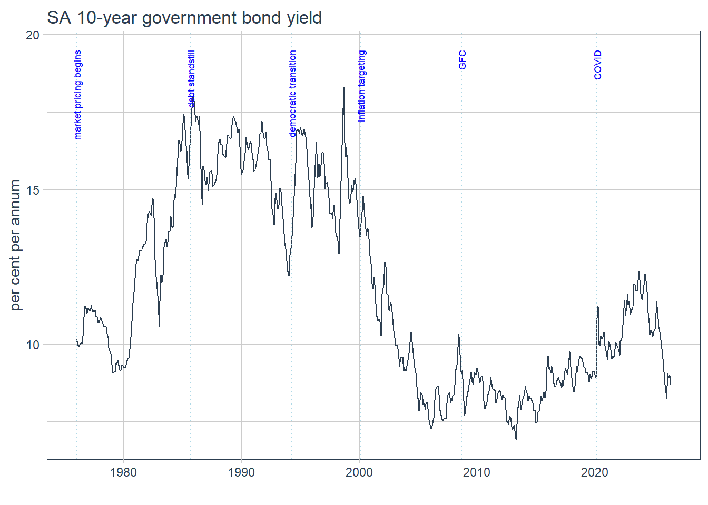
There is no obvious trend. The yield goes up from about 9.5% in 1975 to about 17% by the 1985 debt standstill, and stays between 15% and 17% for most of the time until the late 1990s. It peaks at 18.3% in 1998. After inflation targeting starts it falls quickly to about 8% by the mid-2000s, and then stays between 7% and 10% until 2020. It goes up to about 12% in 2023 and 2024 and falls back to about 9% by 2026. The yield moves in long swings that last for years and does not keep coming back to one average level. This is what you would expect if the series has a unit root, which I test below.
# first differences and a 24-month rolling standard deviation
roll_sd_24 <- rollify(\(x) sd(x, na.rm = TRUE), window = 24)
za_diff <- za_tt |>
mutate(change = yield - lag(yield)) |>
filter(!is.na(change)) |>
mutate(roll_sd = roll_sd_24(change))
za_diff |>
plot_time_series(date, change, .smooth = FALSE, .interactive = FALSE, .title = "First differences of the yield", .y_lab = "percentage points")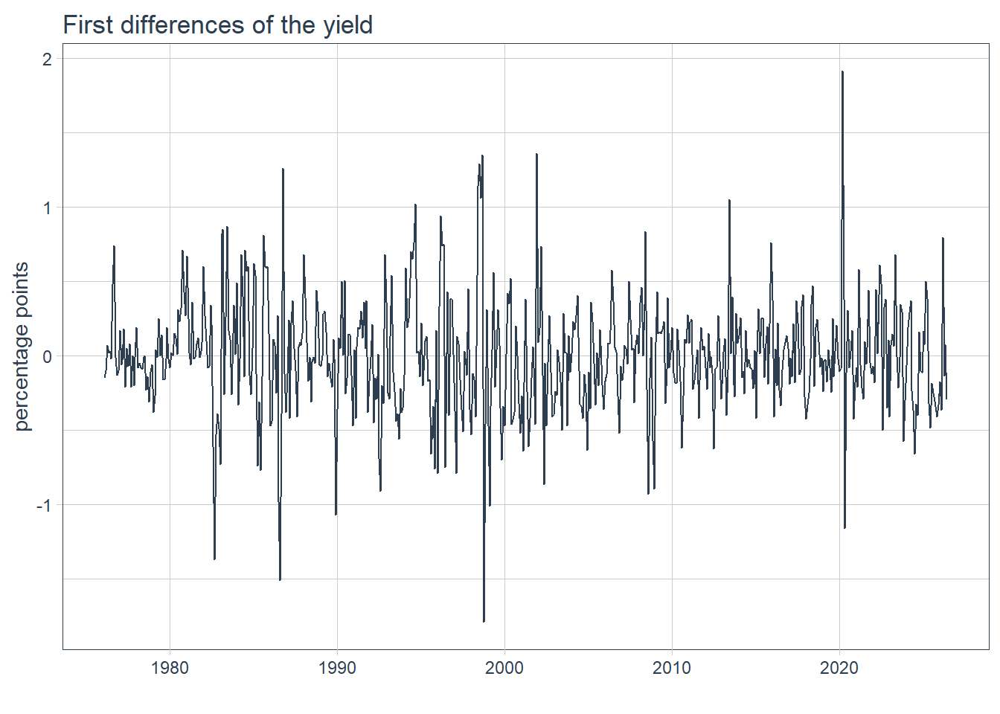
za_diff |>
filter(!is.na(roll_sd)) |>
plot_time_series(date, roll_sd, .smooth = FALSE, .interactive = FALSE, .title = "24-month rolling standard deviation of changes", .y_lab = "percentage points")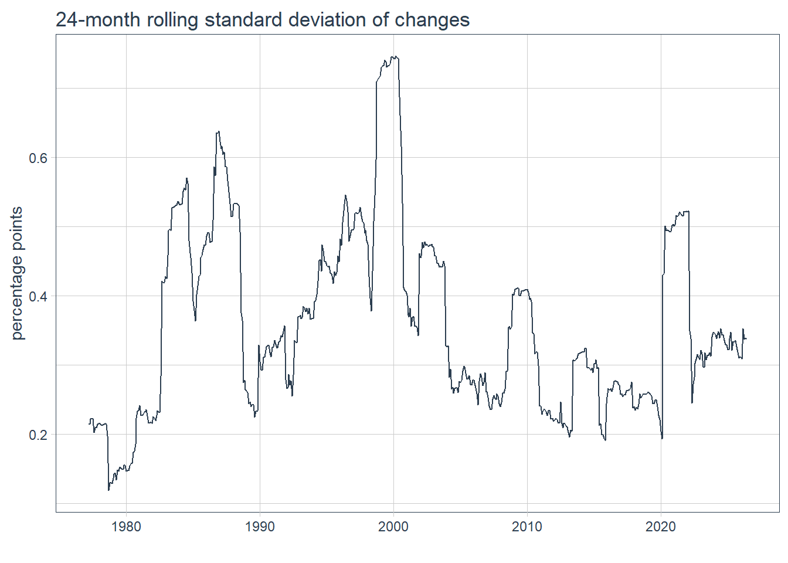
The first differences fluctuate around zero with no visible trend, but their spread changes over time. The 24-month rolling standard deviation is consistent with non-constant variance, which motivates the volatility models in Project 2. Time-varying conditional variance is compatible with weak stationarity of the changes, provided the unconditional variance is finite, so these plots do not by themselves show that the changes are non-stationary.
The rolling standard deviation is lowest in the late 1970s, at about 0.12 to 0.22 percentage points. It goes up to about 0.55 to 0.64 between 1983 and 1987, around the debt standstill, drops to about 0.25 by 1990, and is highest at about 0.74 between 1998 and 2000. After inflation targeting it is mostly between 0.2 and 0.3 from 2004 to 2019, apart from a bump to about 0.4 around the 2008 financial crisis. It jumps to about 0.52 in 2020 and has been about 0.33 since 2022. Each value uses the last 24 months, so one big change, like the rise in early 2020, keeps the rolling value high for exactly 24 months until it drops out. This is why some of the peaks in the plot have flat tops.
# ACF and PACF of the levels
za_ts |>
gg_tsdisplay(yield, plot_type = "partial", lag_max = 36) +
labs(title = "Levels: series, ACF and PACF")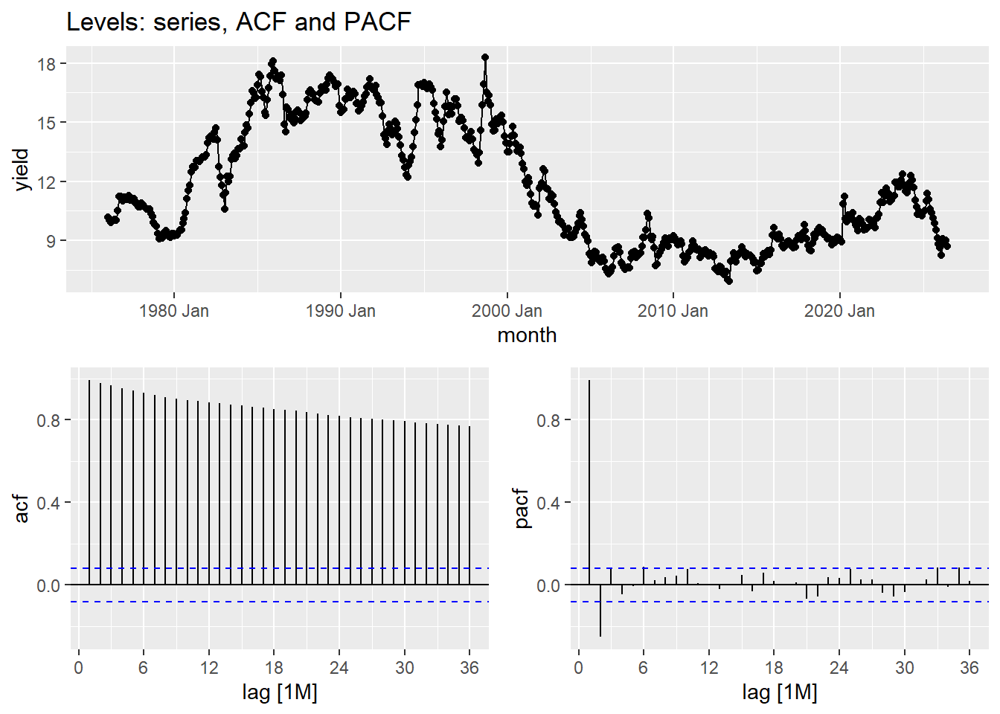
The ACF of the levels starts close to 1 and goes down very slowly, and it is still about 0.77 at lag 36. The PACF has one big spike close to 1 at lag 1, a smaller negative spike of about -0.24 at lag 2, and not much else. This is what a series with a unit root looks like, so the levels need to be differenced. The negative spike at lag 2 fits with the positive lag 1 autocorrelation in the changes, which I look at next.
# ACF and PACF of the first differences
za_ts |>
gg_tsdisplay(difference(yield), plot_type = "partial", lag_max = 36) +
labs(title = "First differences: series, ACF and PACF")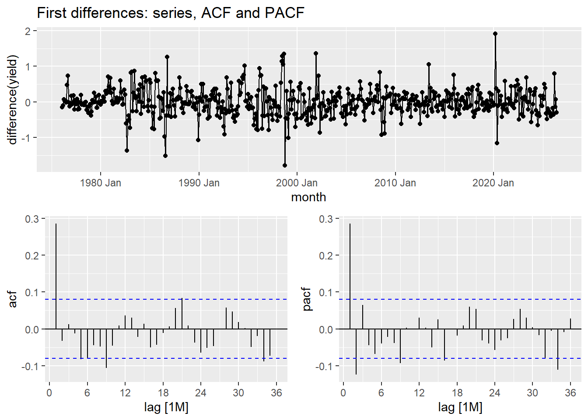
The changes have one clear autocorrelation, about 0.28 at lag 1. The others are small. A few are on or just over the bounds (lag 9 at about -0.10, and lags 21 and 34), but with 36 lags tested at the 5% level, one or two are expected to cross by chance. The PACF is 0.28 at lag 1 and about -0.12 at lag 2, and then dies out with alternating signs. An ACF that cuts off after lag 1 and a PACF that dies out points to an MA(1) for the changes, which is ARIMA(0,1,1) for the levels. If it were an AR(1), the PACF would cut off after lag 1 instead. There are no spikes at lags 12, 24 or 36, so there is no sign of seasonality.
# ADF and KPSS tests on the levels and the first differences
lv <- za_tbl$yield
dlv <- diff(lv)
tibble(
series = c("levels", "first differences"),
adf_stat = c(adf.test(lv)$statistic, adf.test(dlv)$statistic),
adf_p = c(adf.test(lv)$p.value, adf.test(dlv)$p.value),
kpss_stat = c(kpss.test(lv)$statistic, kpss.test(dlv)$statistic),
kpss_p = c(kpss.test(lv)$p.value, kpss.test(dlv)$p.value)
) |>
mutate(across(where(is.numeric), \(x) round(x, 4))) |>
kable(caption = "ADF tests the null of a unit root; KPSS tests the null of stationarity. tseries truncates p-values at the ends of its tables.")| series | adf_stat | adf_p | kpss_stat | kpss_p |
|---|---|---|---|---|
| levels | -2.3008 | 0.451 | 3.7953 | 0.01 |
| first differences | -9.9020 | 0.010 | 0.1269 | 0.10 |
The ADF test has the null hypothesis that there is a unit root (the tseries version includes a constant and a linear trend). The KPSS test has the opposite null hypothesis, that the series is stationary. For the levels, the ADF test does not reject a unit root (statistic -2.30, p = 0.45) and the KPSS test rejects stationarity (statistic 3.80, p < 0.01). For the first differences it is the other way round: the ADF test rejects a unit root (statistic -9.90, p < 0.01) and the KPSS test does not reject stationarity (statistic 0.13, p > 0.10). So both tests agree that the yield needs to be differenced once. tseries cuts off the p-values at the ends of its tables, so the printed values of 0.01 and 0.10 are bounds, not exact values.
In summary, I treat the yield as needing one difference. Project 1 forecasts the levels with one difference, and Projects 2 and 4 model the monthly changes. The ACF of the changes points to an MA(1), which Projects 1 and 2 use. The spread of the changes moves over time, so Project 2 tests for volatility clustering and models it with GARCH, and the shifts in level and volatility between eras are the reason for the regime model in Project 4. There is no sign of seasonality in the changes. This is why Project 1 only uses the seasonal naive method as a check, and why Project 3 uses a different series for harmonic regression.
The series is the average monthly air temperature at Nottingham Castle from 1920 to 1939, in degrees Fahrenheit, supplied with R as the nottem dataset.
# monthly temperature series (degrees Fahrenheit) and a train/test split, holding out the last 24 months
temp_ts <- datasets::nottem
h_test <- 24
n_train <- length(temp_ts) - h_test
y_train <- window(temp_ts, end = time(temp_ts)[n_train])
y_test <- window(temp_ts, start = time(temp_ts)[n_train + 1])
tibble(set = c("train", "test"),
n = c(length(y_train), length(y_test)),
start = c(paste(start(y_train), collapse = "-"), paste(start(y_test), collapse = "-")),
end = c(paste(end(y_train), collapse = "-"), paste(end(y_test), collapse = "-"))
) |> kable(caption = "Training and test sets.")| set | n | start | end |
|---|---|---|---|
| train | 216 | 1920-1 | 1937-12 |
| test | 24 | 1938-1 | 1939-12 |
The last 24 months are held out so that the harmonic regression and the SARIMA in Project 3 can be compared on the same out-of-sample period. The time and seasonal plots show the full series. The numerical checks below use the training set only, so that the held-out months play no part in choosing the model.
# time plot and seasonal plot of the full series
# forecast is not attached until Project 3, because it masks accuracy() from fabletools, which Project 1 relies on
forecast::autoplot(temp_ts) +
labs(title = "Average monthly air temperature at Nottingham Castle", x = "year", y = "degrees Fahrenheit")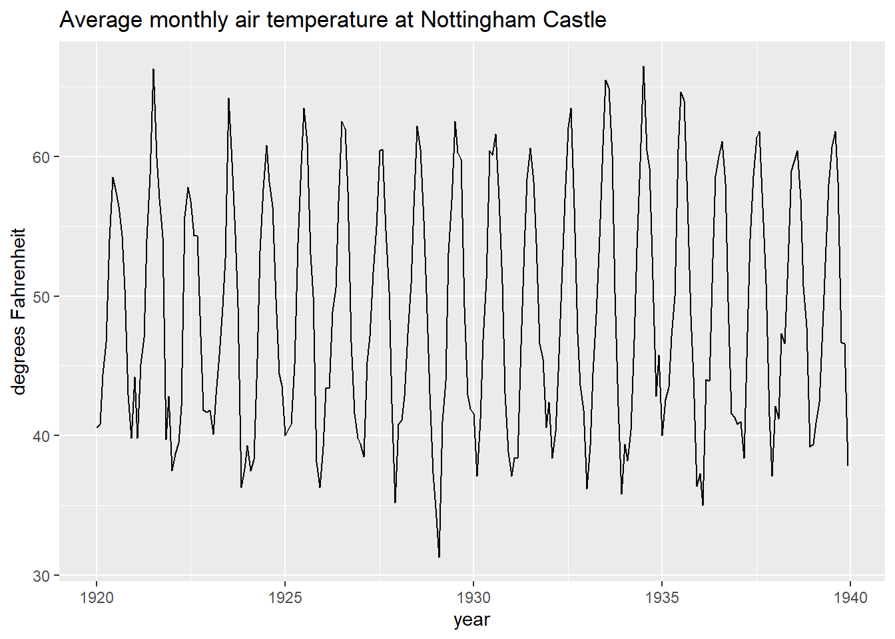
forecast::ggseasonplot(temp_ts) +
labs(title = "Seasonal plot: one line per year", x = NULL, y = "degrees Fahrenheit")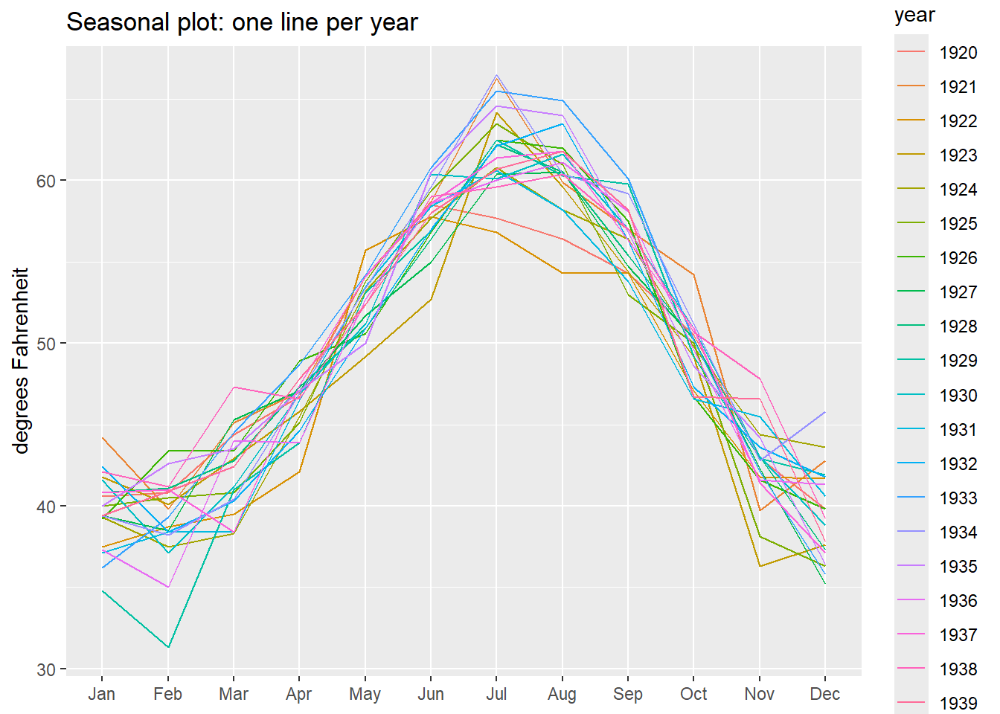
The temperature has a strong and regular yearly cycle, from about 39°F to 40°F in winter up to about 60°F to 62°F in July and August on average. The seasonal plot shows that the shape of the cycle is about the same every year: lowest in January or February, rising steadily to a peak in July or August, and falling through autumn. Years mostly differ by only a few degrees. The most unusual month is February 1929, the coldest month in the series at 31.3°F, and the warmest summers, like 1921 and 1934, reach about 66°F. There is no visible trend.
# monthly summary statistics on the training set
tibble(month = factor(month.abb[cycle(y_train)], levels = month.abb), temp = as.numeric(y_train)) |>
group_by(month) |>
summarise(mean = mean(temp), sd = sd(temp), min = min(temp), max = max(temp)) |>
mutate(across(where(is.numeric), \(x) round(x, 1))) |>
kable(caption = "Monthly temperature summaries, training set 1920 to 1937 (degrees Fahrenheit).")| month | mean | sd | min | max |
|---|---|---|---|---|
| Jan | 39.6 | 2.3 | 34.8 | 44.2 |
| Feb | 39.0 | 2.8 | 31.3 | 43.4 |
| Mar | 41.9 | 2.4 | 38.3 | 45.3 |
| Apr | 46.2 | 1.7 | 42.1 | 48.9 |
| May | 52.6 | 1.8 | 49.2 | 55.7 |
| Jun | 58.0 | 2.0 | 52.7 | 60.8 |
| Jul | 62.1 | 2.7 | 56.8 | 66.5 |
| Aug | 60.5 | 2.6 | 54.3 | 64.9 |
| Sep | 56.4 | 2.1 | 53.0 | 60.1 |
| Oct | 49.6 | 1.9 | 46.6 | 54.2 |
| Nov | 42.1 | 2.2 | 36.3 | 45.5 |
| Dec | 39.6 | 3.0 | 35.2 | 45.8 |
February is the coldest month on average (39.0°F) and July is the warmest (62.1°F), so the seasonal range is about 23°F. The standard deviation across years goes from 1.7°F in April to 3.0°F in December. It tends to be bigger in winter and July than in spring and autumn, and the biggest variance is about three times the smallest. There are only 18 years for each month, so these standard deviations are not very precise and this is only weak evidence that the variance changes through the year. It is still worth checking in the residuals in Project 3, because the harmonic regression assumes a constant error variance.
# annual means remove the seasonal cycle, so a trend would show up directly
# the training set starts in January 1920 and has 18 complete years
annual <- tibble(year = rep(1920:1937, each = 12), temp = as.numeric(y_train)) |>
group_by(year) |>
summarise(mean_temp = mean(temp))
ggplot(annual, aes(year, mean_temp)) +
geom_line() +
geom_point() +
geom_smooth(method = "lm", se = FALSE, linetype = "dashed", colour = "blue") +
labs(title = "Annual mean temperature with a fitted linear trend", x = "year", y = "degrees Fahrenheit")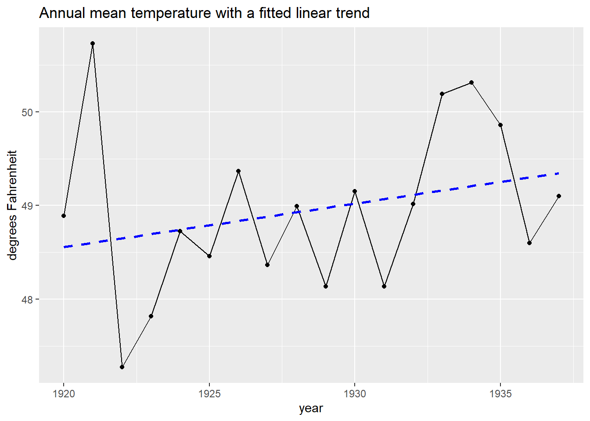
# least squares slope; with 18 annual means the p-value is a rough guide only
trend_fit <- lm(mean_temp ~ year, data = annual)
summary(trend_fit)$coefficients["year", , drop = FALSE] |>
as_tibble() |>
rename(slope = Estimate, se = `Std. Error`, t = `t value`, p_value = `Pr(>|t|)`) |>
mutate(across(everything(), \(x) signif(x, 3))) |>
kable(caption = "Linear trend in the annual means (degrees Fahrenheit per year).")| slope | se | t | p_value |
|---|---|---|---|
| 0.0465 | 0.0406 | 1.14 | 0.269 |
The annual means range from about 47.3°F (1922) to 50.7°F (1921). The fitted slope is 0.047°F per year with a standard error of 0.041 (t = 1.14, p = 0.27), so there is no evidence of a linear trend from 1920 to 1937. With only 18 annual means the test is weak, so this does not prove there is no trend, only that any trend is small compared with how much the years differ from each other. The annual means also do not wander the way they would with a unit root. This supports using a constant mean with stationary ARMA errors (d = 0) in Project 3.
# ACF of the training series, and of the anomalies left after subtracting each calendar month's mean
anom <- y_train - ave(y_train, cycle(y_train))
forecast::ggAcf(y_train, lag.max = 36) +
labs(title = "ACF of the training series")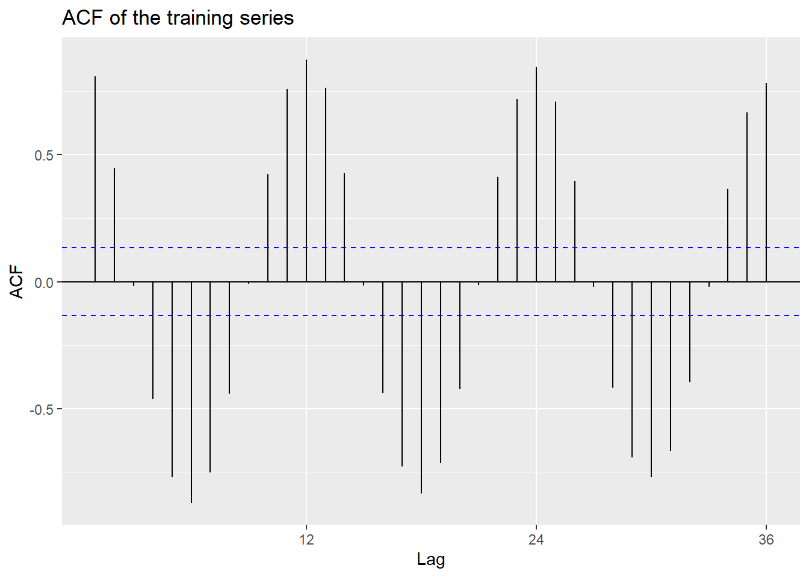
forecast::ggAcf(anom, lag.max = 36) +
labs(title = "ACF of the monthly anomalies")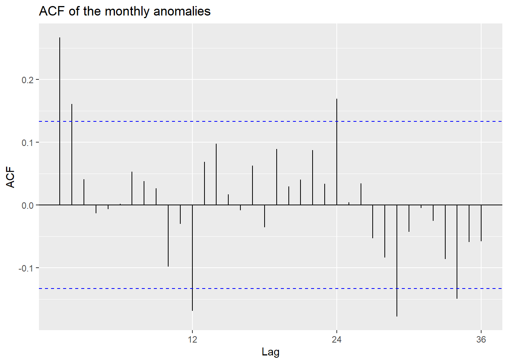
The ACF of the series is dominated by the yearly cycle. It is about 0.8 to 0.87 at lags 12, 24 and 36 and about -0.85 at lags 6, 18 and 30, and it hardly dies out. This is what a fixed seasonal pattern looks like, and it hides any other autocorrelation. After taking away each month’s average, the anomalies have autocorrelations of about 0.27 at lag 1 and 0.16 at lag 2, both outside the bounds. So a warmer than usual month tends to be followed by another warmer than usual month. Four later lags (12, 24, 28 and 34) cross the bounds, a bit more than the two or so expected by chance, but they have mixed signs and no clear pattern. The short-term autocorrelation points to a low-order AR model for the errors, such as AR(1) or AR(2).
The comparison is between the naive (random walk) forecast, the drift method, a non-seasonal ARIMA model and, as a deliberate check for seasonality, the seasonal naive method. All are evaluated by rolling-origin cross-validation on the yield in levels.
I use an expanding window, which means each model is refitted on all the data up to the forecast origin. This is what a forecaster with the full history would do, and it uses as much data as possible. A sliding window would adapt faster to new regimes, but it would throw away data that still help to estimate the MA coefficient. The first window is 240 months (20 years), from March 1975 to February 1995. This gives a stable first estimate and still leaves 365 forecast origins. The naive forecast is the natural benchmark for a series with a unit root, the drift method checks whether a linear trend helps, and the seasonal naive method checks for seasonality. I leave out the mean forecast, because the EDA shows a unit root, so the yield does not return to its historical mean.
# fable supplies the model functions for the tsibble workflow already in use
library(fable)# cross-validation settings: initial training window, step between origins, longest horizon
init <- 240
step <- 1
h_max <- 12The ARIMA order is selected once, on the initial training window only, so that the later evaluation data play no part in choosing it.
# automatic non-seasonal ARIMA selection on the initial window
za_ts |>
slice(1:init) |>
model(auto = fable::ARIMA(yield ~ PDQ(0, 0, 0))) |>
fabletools::report()Series: yield
Model: ARIMA(0,1,1)
Coefficients:
ma1
0.4224
s.e. 0.0537
sigma^2 estimated as 0.1195: log likelihood=-84.85
AIC=173.69 AICc=173.74 BIC=180.64The cross-validation uses ARIMA(0,1,1) without a constant. The order is fixed across origins, while the coefficients are re-estimated at every origin. This is the same order that was selected on the first window, and the automatic selection also chose no constant. For a differenced series a constant acts as a drift, which carries the average monthly change forward in a straight line. Over the full sample the average change is -0.001 percentage points per month, which is basically zero. Over the first window the yield went up from about 9.5% to about 16%, so a drift estimated there would predict rises that did not carry on. The drift method’s higher RMSE at long horizons, shown below, fits with this.
# expanding window training sets and the four models fitted at each origin
# the last h_max months are dropped so every origin has all horizons observed
za_cv <- za_ts |>
slice(1:(n() - h_max)) |>
stretch_tsibble(.init = init, .step = step)
cv_fits <- za_cv |>
model(
naive = NAIVE(yield),
drift = RW(yield ~ drift()),
snaive = SNAIVE(yield ~ lag(12)),
arima = fable::ARIMA(yield ~ 0 + pdq(0, 1, 1) + PDQ(0, 0, 0))
)# forecasts from every origin, labelled by horizon, and accuracy by horizon
cv_fc <- cv_fits |>
forecast(h = h_max) |>
group_by(.id, .model) |>
mutate(h = row_number()) |>
ungroup() |>
as_fable(response = "yield", distribution = yield)
cv_acc <- cv_fc |>
accuracy(za_ts, by = c("h", ".model"))
tibble(origins = n_distinct(za_cv$.id)) |>
kable(caption = "Number of forecast origins.")| origins |
|---|
| 365 |
# cross-validated RMSE at selected horizons
cv_acc |>
filter(h %in% c(1, 3, 6, 12)) |>
select(h, .model, RMSE) |>
pivot_wider(names_from = .model, values_from = RMSE) |>
mutate(across(-h, \(x) round(x, 4))) |>
kable(caption = "Cross-validated RMSE by horizon (percentage points).")| h | arima | drift | naive | snaive |
|---|---|---|---|---|
| 1 | 0.3715 | 0.3833 | 0.3819 | 1.2299 |
| 3 | 0.7365 | 0.7434 | 0.7365 | 1.2003 |
| 6 | 1.0243 | 1.0325 | 1.0127 | 1.1850 |
| 12 | 1.1943 | 1.2326 | 1.1836 | 1.1836 |
One month ahead, ARIMA(0,1,1) is the most accurate with an RMSE of 0.372 percentage points. This is 2.7% lower than the naive forecast (0.382) and 3.1% lower than drift (0.383). Three months ahead, ARIMA and naive are equal (0.737). At six and twelve months naive is best, about 1% better than ARIMA (1.013 against 1.024, and 1.184 against 1.194), and drift is worse again (1.033 and 1.233). Seasonal naive is much worse at short horizons, with an RMSE of 1.230 one month ahead, more than three times that of naive. At twelve months it gives exactly the same RMSE as naive, because the seasonal naive forecast twelve months ahead is the last observation, which is also the naive forecast. The RMSE goes up with the horizon for every method, as expected for a series with a unit root.
# RMSE against horizon for each method
cv_acc |>
ggplot(aes(h, RMSE, linetype = .model, colour = .model)) +
geom_line() +
scale_x_continuous(breaks = 1:h_max) +
labs(title = "Cross-validated RMSE by horizon", x = "Months ahead", y = "RMSE (percentage points)", linetype = NULL, colour = NULL)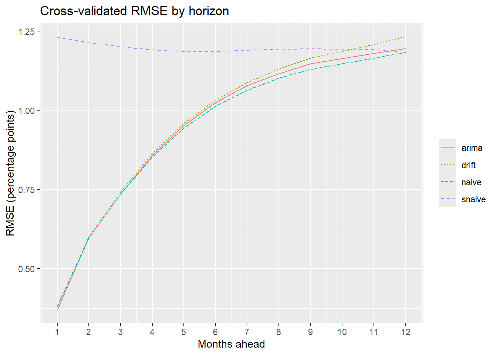
# RMSE of each method relative to naive: below one means it beats the random walk
cv_acc |>
select(h, .model, RMSE) |>
group_by(h) |>
mutate(rel_rmse = RMSE / RMSE[.model == "naive"]) |>
ungroup() |>
filter(.model != "naive") |>
ggplot(aes(h, rel_rmse, linetype = .model)) +
geom_line() +
geom_hline(yintercept = 1, colour = "grey50") +
scale_x_continuous(breaks = 1:h_max) +
labs(title = "RMSE relative to the naive forecast", x = "Months ahead", y = "Relative RMSE", linetype = NULL)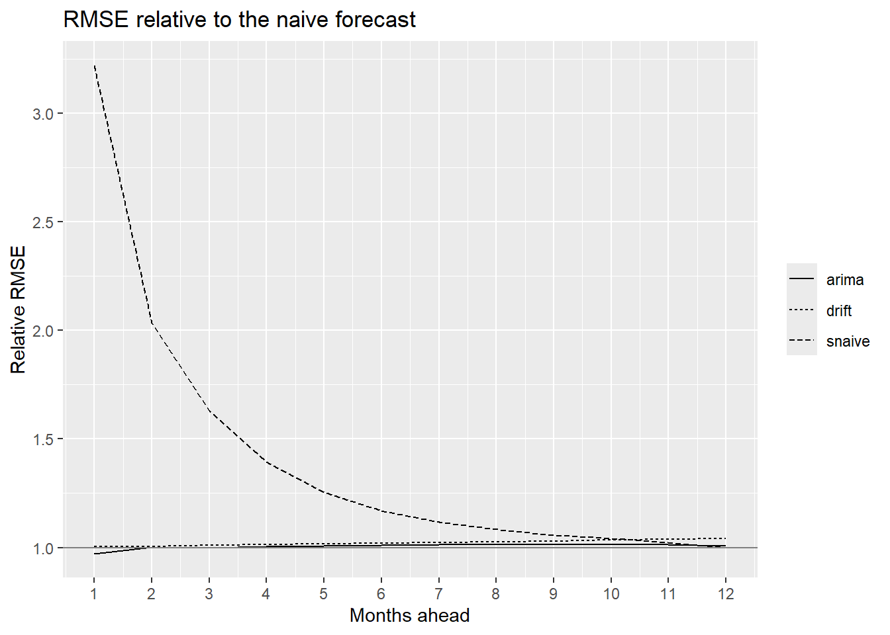
Only ARIMA beats the naive forecast, and only one month ahead, where its relative RMSE is about 0.97. From two months ahead it is within about 1% of naive. This comes from the MA(1) part of the model. The ARIMA forecast is the naive forecast plus a fraction of the last forecast error, and after the first month the forecast stays flat, so the benefit only shows up in the first month. Drift is worse than naive at every horizon, and its relative RMSE grows to about 1.04 at twelve months as the trend adds up. So beyond one month, the yield’s own past says very little about where it is going. The differences are also small, so a formal test would be needed before saying that one method is better.
The ARIMA model is then fitted to the full sample for diagnostics and a forecast.
# full sample fit and coefficient table
fit_full <- za_ts |>
model(arima = fable::ARIMA(yield ~ 0 + pdq(0, 1, 1) + PDQ(0, 0, 0)))
tidy(fit_full) |>
select(term, estimate, std.error, p.value) |>
mutate(across(where(is.numeric), \(x) signif(x, 4))) |>
# very small p-values print as 0, so show them as < 0.001
mutate(p.value = format.pval(p.value, digits = 3, eps = 0.001)) |>
kable(caption = "Full sample ARIMA estimates.")| term | estimate | std.error | p.value |
|---|---|---|---|
| ma1 | 0.3429 | 0.03953 | <0.001 |
The full-sample estimate is θ = 0.343 with a standard error of 0.040, which gives an approximate 95% interval of 0.27 to 0.42, so the coefficient is clearly positive. It implies a lag 1 autocorrelation in the monthly changes of θ/(1 + θ²) ≈ 0.31, which is close to the 0.28 in the data, and since |θ| < 1 the model is invertible. A positive θ means that part of a surprise this month carries into next month. For example, if the yield rises 1 percentage point more than expected, the forecast for next month is 0.34 percentage points above this month’s value. One possible reason for this is averaging. The OECD says its long-term rates are generally averages of daily rates (OECD, n.d.), and Working (1960) showed that the changes in averages of a random walk have a lag 1 autocorrelation of about 0.25, which is close to what I find. The estimate is lower than on the first window (0.42), which could be sampling variation or a weaker effect after 1995.
# residual diagnostics: plots and a Ljung-Box test
fit_full |>
gg_tsresiduals(lag_max = 36)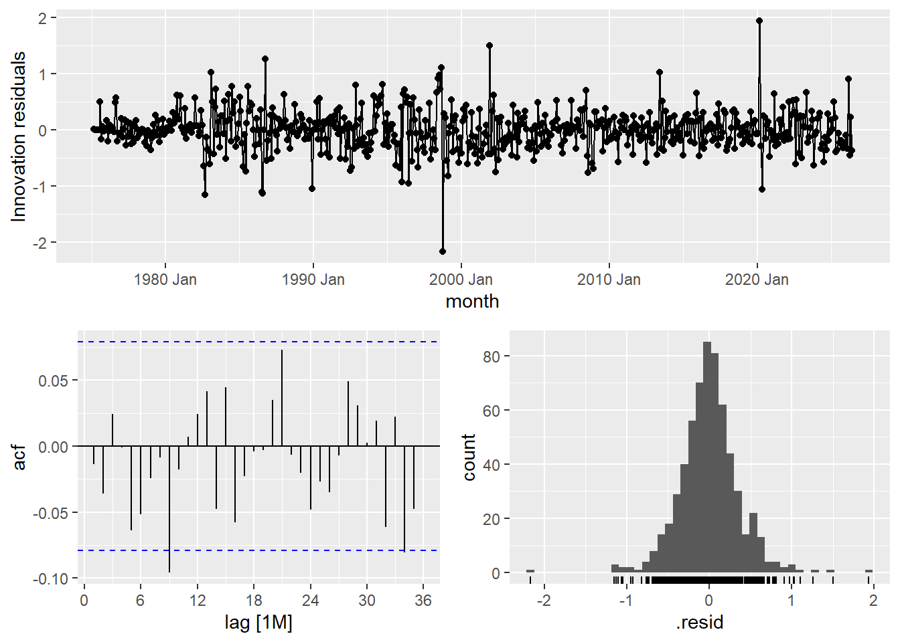
# dof is the number of estimated ARMA coefficients
augment(fit_full) |>
features(.innov, ljung_box, lag = 12, dof = 1) |>
kable(caption = "Ljung-Box test on the ARIMA residuals.")| .model | lb_stat | lb_pvalue |
|---|---|---|
| arima | 12.3044 | 0.3412026 |
The residual ACF shows no pattern. Only lag 9 (about -0.10) crosses the bounds, which is expected by chance with 36 lags. The Ljung-Box test on 12 lags (11 degrees of freedom after allowing for the MA coefficient) gives Q = 12.30 and p = 0.34, so there is no evidence of autocorrelation left in the residuals. The residuals are centred on zero and fairly symmetric, but have heavier tails than a normal distribution, with outliers of about -2.1 in 1998 and +1.9 in 2020. The time plot shows clusters of large residuals in the mid-1980s, around 1998 and in 2020. So the residuals look uncorrelated, but they are not independent and normally distributed with a constant variance. This does not affect the point forecasts, but it does affect the prediction intervals.
# 12 month forecast with prediction intervals, shown against recent history
fit_full |>
forecast(h = h_max) |>
autoplot(filter_index(za_ts, "2015 Jan" ~ .)) +
labs(title = "ARIMA forecast of the yield", x = NULL, y = "per cent per annum")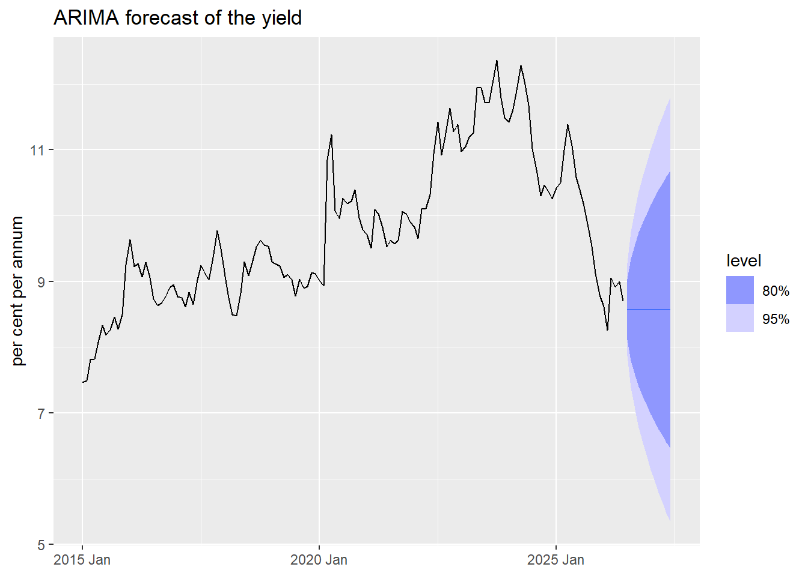
These prediction intervals assume a constant innovation variance, which the exploratory analysis suggests does not hold. Project 2 models the variance directly.
At a monthly level the yield behaves almost like a random walk. ARIMA(0,1,1) picks up a small positive correlation between one month’s change and the next, and improves on the naive forecast by about 3% one month ahead, but not after that. Neither drift nor seasonality helps.
There are three main limitations. First, forecasts from origins next to each other use almost the same data and cover overlapping months, so their errors are correlated. This means the 365 origins contain less information than the number suggests, and I have not formally tested the RMSE differences. Second, I kept the order fixed at (0,1,1) at every origin, so the comparison ignores the uncertainty in choosing the model. Third, the prediction intervals assume a constant variance, which the residuals show is not true, so the intervals are likely too wide in calm periods and too narrow after big shocks.
Possible extensions are a Diebold-Mariano test of the accuracy differences, choosing the order again at each origin, and combining the mean model with the GARCH model from Project 2 so that the prediction intervals get wider and narrower with volatility.
# packages for the variance models (both used in the notes and the ARCH/GARCH guide)
library(rugarch)
library(FinTS)The series modelled is the monthly change in the yield, in percentage points, from April 1975 onwards. I use changes in percentage points because that is the normal way to measure changes in yields, and a bond’s price change is roughly proportional to the change in its yield. Log changes measure relative changes, which assumes that changes get bigger when the yield is higher. The yield ranges from about 7% to 18% in this sample, so log changes would shrink the changes in the 1980s and 1990s compared with later years and build a level effect into the volatility. That is something to test, not assume. Percentage points also keep the units the same as in Projects 1 and 4.
# change series and a small ARMA grid for the conditional mean
dy <- diff(za_tbl$yield)
expand_grid(p = 0:2, q = 0:2) |>
mutate(
fit = map2(p, q, \(p, q) arima(dy, order = c(p, 0, q))),
aic = map_dbl(fit, AIC),
bic = map_dbl(fit, BIC)
) |>
select(-fit) |>
arrange(bic) |>
mutate(across(c(aic, bic), \(x) round(x, 2))) |>
kable(caption = "Candidate ARMA(p, q) mean models for the yield changes.")| p | q | aic | bic |
|---|---|---|---|
| 0 | 1 | 498.68 | 511.94 |
| 0 | 2 | 499.64 | 517.33 |
| 1 | 1 | 499.66 | 517.34 |
| 2 | 0 | 502.41 | 520.09 |
| 1 | 0 | 509.87 | 523.13 |
| 2 | 1 | 501.63 | 523.74 |
| 1 | 2 | 501.64 | 523.75 |
| 2 | 2 | 503.65 | 530.18 |
| 0 | 0 | 559.53 | 568.37 |
The mean model is MA(1), chosen from the ACF of the changes in the EDA. Both criteria agree with this: MA(1) has the lowest BIC (511.9) and the lowest AIC (498.7). The next best models by BIC, MA(2) and ARMA(1,1), are about 5.4 higher, and the white noise model is about 56 higher.
# fit the chosen mean model and keep its residuals
mean_order <- c(0, 1)
mean_fit <- arima(dy, order = c(mean_order[1], 0, mean_order[2]))
e_hat <- as.numeric(residuals(mean_fit))
# the first month is lost to differencing
za_res <- tibble(month = za_ts$month[-1], e = e_hat) |>
as_tsibble(index = month)# correlograms of the mean residuals and of their squares
za_res |>
feasts::ACF(e, lag_max = 24) |>
autoplot() +
labs(title = "ACF of mean model residuals")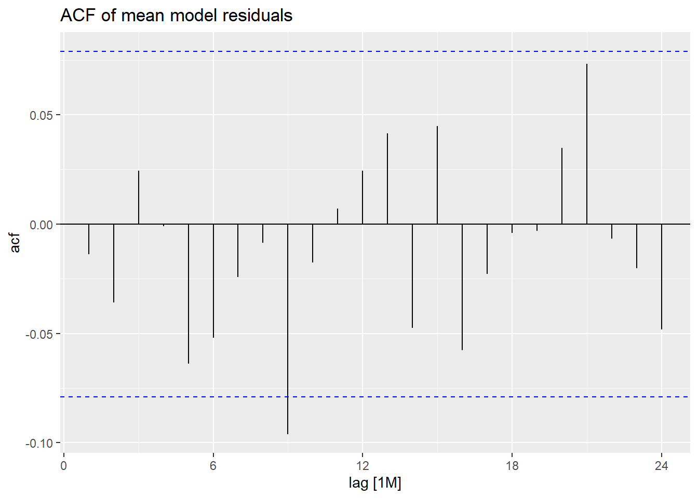
za_res |>
feasts::ACF(e^2, lag_max = 24) |>
autoplot() +
labs(title = "ACF of squared mean model residuals")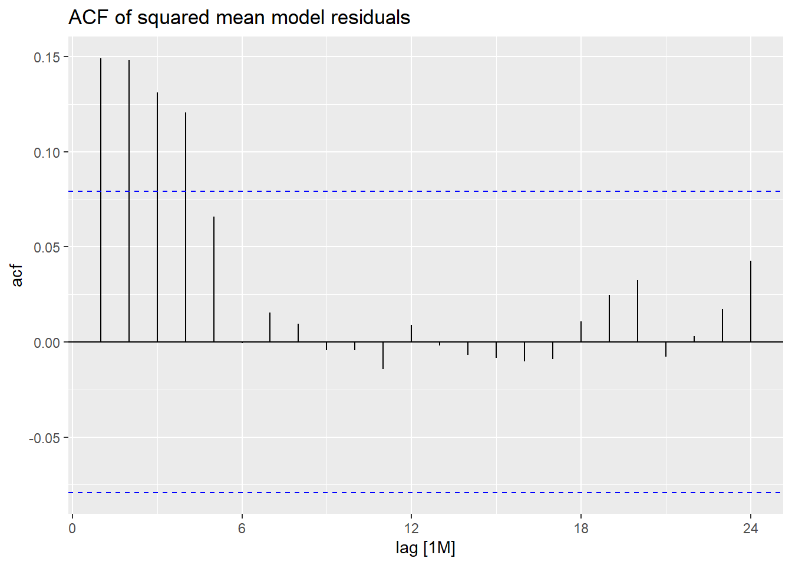
The residuals of the MA(1) model show no autocorrelation. Every lag up to 24 is inside the bounds except lag 9 (about -0.10), which is borderline. The squared residuals are different. Their autocorrelations are about 0.15, 0.15, 0.13 and 0.12 at lags 1 to 4, all outside the bounds, and close to zero after that. So big changes, up or down, tend to be followed by more big changes for a few months. This is volatility clustering.
# tests for remaining linear structure and for ARCH effects, at 12 lags
lb_e <- Box.test(e_hat, lag = 12, type = "Ljung-Box", fitdf = sum(mean_order))
lb_e2 <- Box.test(e_hat^2, lag = 12, type = "Ljung-Box")
lm_e <- ArchTest(e_hat, lags = 12)
tibble(
test = c("Ljung-Box, residuals", "Ljung-Box, squared residuals", "Engle ARCH LM"),
statistic = c(lb_e$statistic, lb_e2$statistic, lm_e$statistic),
df = c(lb_e$parameter, lb_e2$parameter, lm_e$parameter),
p_value = c(lb_e$p.value, lb_e2$p.value, lm_e$p.value)
) |>
mutate(statistic = round(statistic, 3), p_value = signif(p_value, 3)) |>
kable(caption = "Tests on the residuals of the mean model.")| test | statistic | df | p_value |
|---|---|---|---|
| Ljung-Box, residuals | 12.289 | 11 | 3.42e-01 |
| Ljung-Box, squared residuals | 50.111 | 12 | 1.30e-06 |
| Engle ARCH LM | 33.389 | 12 | 8.41e-04 |
The Ljung-Box test on the residuals (Q = 12.29, 11 degrees of freedom, p = 0.34) does not reject no autocorrelation, so the MA(1) mean model is fine. The Ljung-Box test on the squared residuals (Q = 50.1, 12 degrees of freedom, p < 0.001) and Engle’s LM test (33.4, 12 degrees of freedom, p < 0.001) both reject no ARCH effects. So the variance of the changes moves over time, which is why I fit GARCH models.
# normal quantile plot of the mean residuals
tibble(e = e_hat) |>
ggplot(aes(sample = e)) +
stat_qq(size = 0.8) +
stat_qq_line() +
labs(title = "Normal quantile plot of mean model residuals", x = "Theoretical quantile", y = "Sample quantile")The points follow the line in the middle but bend away at both ends, in an S shape. The biggest fall and rise (about -2.2 and +1.9 percentage points) sit at theoretical quantiles near -3 and +3, much further out than a normal distribution allows. So the residuals have heavy tails. Some of this can come from the changing variance itself, because mixing normal distributions with different variances gives heavier tails than one normal. To see whether a GARCH model with normal errors is enough, I compare normal and Student t errors below.
Four variance models are fitted, each jointly with the ARMA mean: GARCH(1,1) and GJR-GARCH(1,1), each with normal and Student t innovations.
# specify and fit the four models
make_spec <- \(model, dist) ugarchspec(
variance.model = list(model = model, garchOrder = c(1, 1)),
mean.model = list(armaOrder = mean_order, include.mean = TRUE),
distribution.model = dist
)
models <- tribble(
~ name, ~ model, ~ dist,
"GARCH normal", "sGARCH", "norm",
"GARCH t", "sGARCH", "std",
"GJR normal", "gjrGARCH", "norm",
"GJR t", "gjrGARCH", "std"
)
garch_fits <- map2(models$model, models$dist, \(m, d) ugarchfit(make_spec(m, d), data = dy, solver = "hybrid")) |>
set_names(models$name)# coefficient estimates with robust standard errors
# rugarch names: omega is alpha_0, gamma1 is the asymmetry term, shape is the t degrees of freedom
imap_dfr(garch_fits, \(f, nm) {
m <- f@fit$robust.matcoef
tibble(model = nm, term = rownames(m), estimate = m[, 1], robust_se = m[, 2], p_value = m[, 4])
}) |>
mutate(across(c(estimate, robust_se), \(x) round(x, 4)), p_value = format.pval(p_value, digits = 3, eps = 0.001)) |>
kable(caption = "Estimates with robust standard errors.")| model | term | estimate | robust_se | p_value |
|---|---|---|---|---|
| GARCH normal | mu | 0.0056 | 0.0168 | 0.73860 |
| GARCH normal | ma1 | 0.3143 | 0.0411 | < 0.001 |
| GARCH normal | omega | 0.0398 | 0.0176 | 0.02338 |
| GARCH normal | alpha1 | 0.2110 | 0.0914 | 0.02091 |
| GARCH normal | beta1 | 0.4821 | 0.1552 | 0.00189 |
| GARCH t | mu | -0.0074 | 0.0150 | 0.62289 |
| GARCH t | ma1 | 0.3060 | 0.0415 | < 0.001 |
| GARCH t | omega | 0.0140 | 0.0091 | 0.12405 |
| GARCH t | alpha1 | 0.1901 | 0.0679 | 0.00511 |
| GARCH t | beta1 | 0.7211 | 0.1148 | < 0.001 |
| GARCH t | shape | 5.2893 | 1.4698 | < 0.001 |
| GJR normal | mu | 0.0053 | 0.0177 | 0.76513 |
| GJR normal | ma1 | 0.3139 | 0.0419 | < 0.001 |
| GJR normal | omega | 0.0397 | 0.0182 | 0.02890 |
| GJR normal | alpha1 | 0.2082 | 0.1083 | 0.05454 |
| GJR normal | beta1 | 0.4829 | 0.1585 | 0.00231 |
| GJR normal | gamma1 | 0.0066 | 0.1125 | 0.95354 |
| GJR t | mu | -0.0075 | 0.0157 | 0.63405 |
| GJR t | ma1 | 0.3059 | 0.0419 | < 0.001 |
| GJR t | omega | 0.0139 | 0.0095 | 0.14096 |
| GJR t | alpha1 | 0.1883 | 0.0894 | 0.03526 |
| GJR t | beta1 | 0.7216 | 0.1185 | < 0.001 |
| GJR t | gamma1 | 0.0037 | 0.0841 | 0.96521 |
| GJR t | shape | 5.2903 | 1.4674 | < 0.001 |
The mean part is almost the same in all four models. The MA(1) coefficient is about 0.31 (robust standard error about 0.04), close to the 0.34 in Project 1, and mu is not significantly different from zero. In the GARCH t model, alpha1 = 0.19 (robust standard error 0.07) shows how strongly the variance reacts to last month’s shock, and beta1 = 0.72 (0.11) shows how much of last month’s variance carries over. With normal errors alpha1 is similar (0.21) but beta1 is much lower (0.48), so volatility dies out faster. A likely reason is that the normal model has to explain extreme months with spikes in the variance that then have to fade quickly, while the t distribution can treat some of them as draws from its heavier tails. The asymmetry term gamma1 is close to zero with a large standard error in both GJR models (0.007 with standard error 0.11, and 0.004 with standard error 0.08, both p > 0.95), so there is no evidence of asymmetry. The t degrees of freedom are about 5.3 (robust standard error 1.5), which means heavy tails. This implies an excess kurtosis of about 6/(5.3 - 4) ≈ 4.6 in the errors, but with this standard error that number is very rough.
# model comparison: likelihood, information criteria and persistence
# rugarch reports information criteria per observation
imap_dfr(garch_fits, \(f, nm) tibble(
model = nm,
loglik = likelihood(f),
aic = infocriteria(f)[1],
bic = infocriteria(f)[2],
persistence = as.numeric(persistence(f)),
half_life = as.numeric(halflife(f)),
long_run_sd = sqrt(as.numeric(uncvariance(f)))
)) |>
mutate(across(where(is.numeric), \(x) round(x, 4))) |>
kable(caption = "Model comparison.")| model | loglik | aic | bic | persistence | half_life | long_run_sd |
|---|---|---|---|---|---|---|
| GARCH normal | -213.8953 | 0.7119 | 0.7478 | 0.6932 | 1.8915 | 0.3602 |
| GARCH t | -187.4612 | 0.6291 | 0.6723 | 0.9112 | 7.4522 | 0.3966 |
| GJR normal | -213.8918 | 0.7151 | 0.7582 | 0.6944 | 1.9002 | 0.3603 |
| GJR t | -187.4600 | 0.6324 | 0.6827 | 0.9117 | 7.4950 | 0.3970 |
All three criteria prefer the Student t models. Switching from normal to t errors raises the log-likelihood by about 26 for one extra parameter, and lowers AIC from 0.712 to 0.629 and BIC from 0.748 to 0.672 (rugarch reports both per observation). Adding the asymmetry term changes the log-likelihood by less than 0.01 and makes both criteria worse, so GARCH t is the best overall. Persistence (alpha1 + beta1) is 0.91 in the t models, which means the gap between the current variance and its long-run level halves in about 7.5 months. In the normal models persistence is 0.69, a half-life of about 1.9 months. The long-run standard deviation of the GARCH t model is 0.40 percentage points, close to the 0.38 in the data. A persistence of 0.91 is not close enough to one to point to an integrated GARCH, but shifts in the overall level of volatility between eras can push estimated persistence up, so refitting on parts of the sample would be a useful check.
# diagnostics on the standardised residuals of each model (p-values, 12 lags)
imap_dfr(garch_fits, \(f, nm) {
z <- as.numeric(residuals(f, standardize = TRUE))
tibble(
model = nm,
lb_z = Box.test(z, lag = 12, type = "Ljung-Box", fitdf = sum(mean_order))$p.value,
lb_z_sq = Box.test(z^2, lag = 12, type = "Ljung-Box")$p.value,
arch_lm = as.numeric(ArchTest(z, lags = 12)$p.value)
)
}) |>
mutate(across(where(is.numeric), \(x) signif(x, 3))) |>
kable(caption = "Diagnostic p-values: Ljung-Box on z, Ljung-Box on z squared, ARCH LM on z.")| model | lb_z | lb_z_sq | arch_lm |
|---|---|---|---|
| GARCH normal | 0.435 | 0.998 | 0.998 |
| GARCH t | 0.442 | 0.998 | 0.997 |
| GJR normal | 0.435 | 0.998 | 0.998 |
| GJR t | 0.442 | 0.998 | 0.997 |
All four models give almost the same diagnostics. The Ljung-Box test on the standardised residuals (p ≈ 0.44) shows no autocorrelation left in the mean, and the Ljung-Box test on their squares and the ARCH LM test (p ≈ 0.998) show no ARCH effects left. Every model removes the volatility clustering, so the diagnostics cannot separate them, and the choice comes down to the likelihood and how well each fits the tails.
# quantile plots of standardised residuals against each model's own innovation distribution
imap_dfr(garch_fits, \(f, nm) {
z <- sort(as.numeric(residuals(f, standardize = TRUE)))
p <- ppoints(length(z))
# qdist gives the unit variance t that rugarch garch_fits
theo <- if ("shape" %in% names(coef(f))) qdist("std", p, shape = coef(f)["shape"]) else qnorm(p)
tibble(model = nm, theoretical = theo, sample = z)
}) |>
ggplot(aes(theoretical, sample)) +
geom_point(size = 0.6) +
geom_abline(slope = 1, intercept = 0) +
facet_wrap(~ model) +
labs(title = "Quantile plots of standardised residuals", x = "Theoretical quantile", y = "Sample quantile")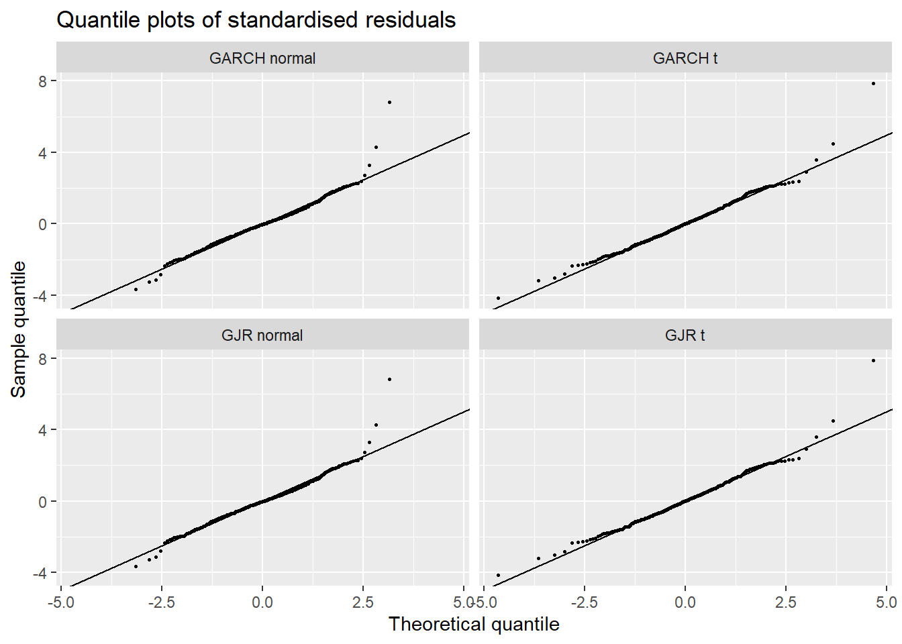
The Student t fits the tails better. With normal errors the largest standardised residuals sit well above the line, at about 4.2 and 6.8 against theoretical values below 3.2. With t errors the points stay close to the line apart from the single largest value. That one month is extreme under every model, at about 7 to 8 standard deviations, so even the t distribution does not fully capture it. It is most likely the rise in early 2020, which came after a calm period.
# news impact curves for the symmetric and asymmetric models
map_dfr(c("GARCH t", "GJR t"), \(nm) {
ni <- newsimpact(z = NULL, garch_fits[[nm]])
tibble(model = nm, shock = ni$zx, variance = ni$zy)
}) |>
ggplot(aes(shock, variance, linetype = model)) +
geom_line() +
labs(title = "News impact curves", x = "Shock at t - 1", y = "Conditional variance at t")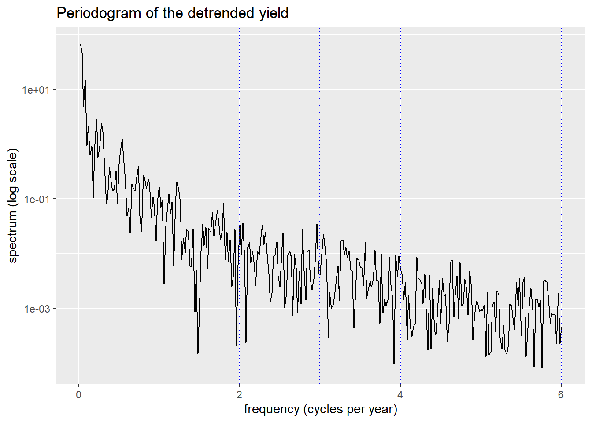
There is no evidence of asymmetry. The two news impact curves lie on top of each other and are symmetric around zero, which matches gamma1 being close to zero. In rugarch’s GJR model the extra term applies to negative shocks, which for a yield are unexpected falls, in other words rises in bond prices. A common idea is that unexpected rises in yields, which mean losses for bondholders, increase volatility more, which would give a negative gamma1. The estimates do not support either direction.
The remaining chunks use the GARCH(1,1) model with Student t errors. It has the lowest AIC and BIC of the four models. GJR t has a log-likelihood that is only about 0.001 higher, because its asymmetry term adds almost nothing apart from an extra parameter. All four models pass the diagnostics equally well, and the t errors fit the tails better than the normal.
# changes against the fitted conditional mean plus and minus two conditional standard deviations
chosen <- "GARCH t"
tibble(
date = za_tbl$date[-1],
change = dy,
mu = as.numeric(fitted(garch_fits[[chosen]])),
s = as.numeric(sigma(garch_fits[[chosen]]))
) |>
ggplot(aes(date)) +
geom_line(aes(y = change), colour = "grey60", linewidth = 0.3) +
geom_line(aes(y = mu + 2 * s), colour = "blue", linewidth = 0.4) +
geom_line(aes(y = mu - 2 * s), colour = "blue", linewidth = 0.4) +
labs(title = paste("Yield changes with two conditional SD band:", chosen), x = NULL, y = "percentage points")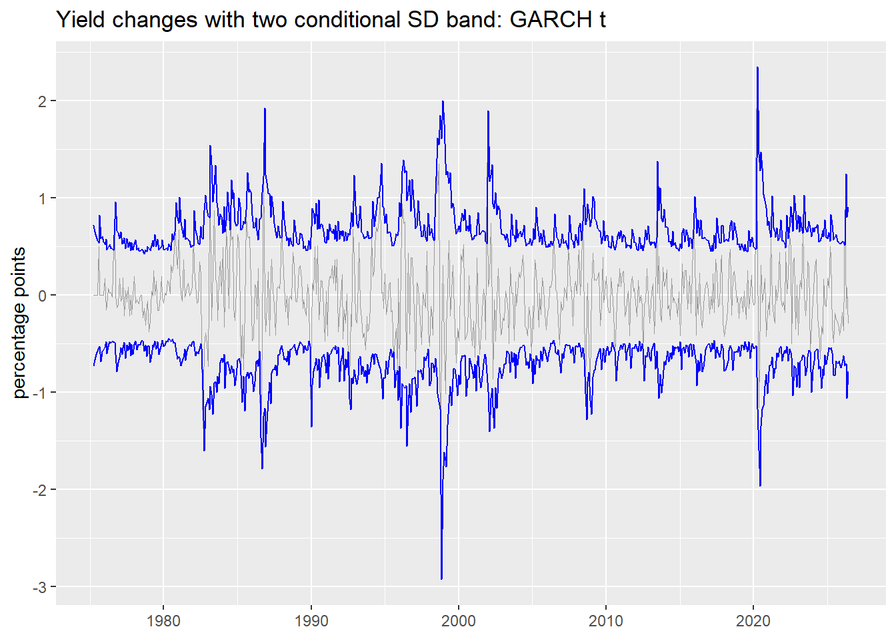
The two standard deviation band is narrowest, at about ±0.5 percentage points, in the late 1970s and for most of the 2000s and 2010s. It gets much wider after big shocks: in the early and mid-1980s, around 1998, when the lower band reaches about -2.9, and in 2020, when the upper band reaches about 2.3. After each spike the band narrows over several months rather than straight away, which is the persistence measured by beta1. The band follows the clusters of big changes in the data, which a constant variance model cannot do.
# 24 month conditional standard deviation forecast, with the long run level marked
garch_fc <- ugarchforecast(garch_fits[[chosen]], n.ahead = 24)
tibble(h = 1:24, sd = as.numeric(sigma(garch_fc))) |>
ggplot(aes(h, sd)) +
geom_line() +
geom_hline(yintercept = sqrt(as.numeric(uncvariance(garch_fits[[chosen]]))), linetype = "dashed") +
labs(title = paste("Forecast conditional SD:", chosen), x = "Months ahead", y = "percentage points")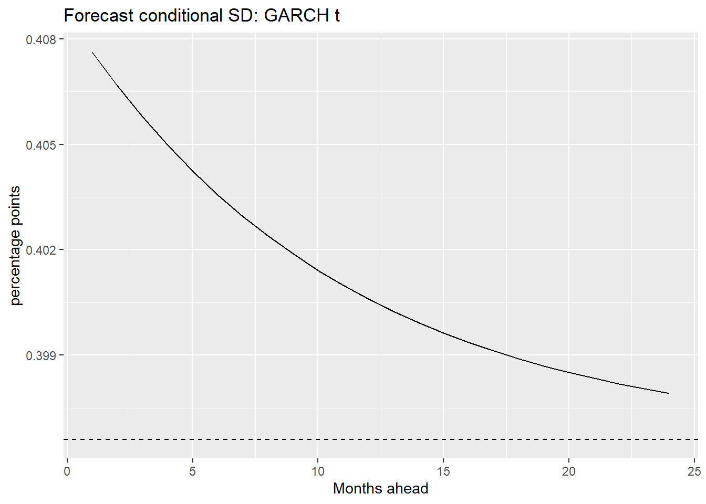
The forecast starts at about 0.408 percentage points one month ahead, only slightly above the long-run level of 0.397. This means volatility at the end of the sample (June 2026) is close to normal. The forecast falls smoothly towards the long-run level, closing half of the remaining gap in the variance about every 7.5 months, and by 24 months (0.398) it has almost reached it. Because it starts so close to the long-run level, the forecast does not say much more than the long-run standard deviation at any horizon. After a volatile period it would start higher and the speed of the decay would matter more.
The monthly changes in the South African 10-year yield have a variance that changes over time. GARCH(1,1) with Student t errors describes this well. It removes the ARCH effects, fits the tails better than normal errors, and shows volatility rising after big shocks and then fading, with a half-life of about 7.5 months. There is no evidence of asymmetry.
There are some limitations. Monthly data, and especially monthly averages, smooth out what happens within each month, so the model only describes volatility at a monthly scale. The sample covers several monetary regimes, and a GARCH model with fixed parameters treats shifts in the overall level of volatility as long-lasting shocks, which may overstate persistence. I also chose the model on in-sample fit rather than on how well it forecasts.
Project 4 looks at this differently. Instead of volatility that changes smoothly after each shock, it lets the changes switch between a few regimes with different volatilities. Comparing the periods that the hidden Markov model puts in its high-volatility state with the spikes in the GARCH band shows whether the two views agree.
nottem, 240 months), with the last 24 months held out# forecast is used for Arima/auto.arima with xreg, fourier() and accuracy()
# it is loaded after fabletools, so its functions are called with forecast:: to avoid masking confusion
library(forecast)The bond yield shows no real seasonal pattern, so harmonic terms would have nothing to describe. The ACF of the changes in the EDA has no spikes at lags 12, 24 or 36, and in Project 1 the seasonal naive forecast is more than three times worse than the naive forecast one month ahead. This project therefore uses a series with a strong, regular yearly cycle, the Nottingham Castle temperature series. Its training and test sets and EDA are in the Data section.
# raw periodogram of the linearly detrended training series
# frequency is in cycles per year because the ts has frequency 12
pg <- spec.pgram(y_train, detrend = TRUE, taper = 0.1, plot = FALSE)
pg_tbl <- tibble(freq = pg$freq, spec = pg$spec) |>
mutate(period_months = 12 / freq, share = spec / sum(spec))
# dotted lines mark the seasonal frequencies 1, 2, ..., 6 cycles per year
ggplot(pg_tbl, aes(freq, spec)) +
geom_line() +
geom_vline(xintercept = 1:6, linetype = "dotted", colour = "blue") +
scale_y_log10() +
labs(title = "Periodogram of the training series", x = "frequency (cycles per year)", y = "spectrum (log scale)")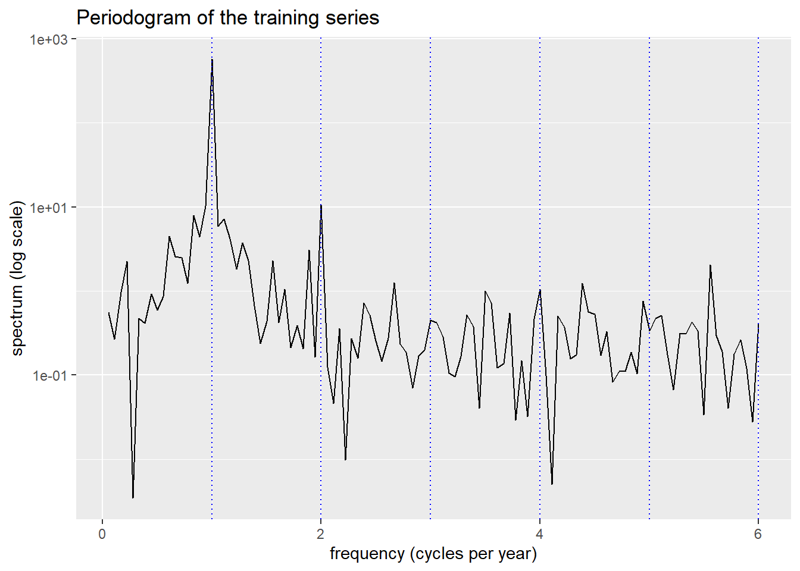
# largest periodogram ordinates
pg_tbl |>
slice_max(spec, n = 6) |>
mutate(across(where(is.numeric), \(x) round(x, 4))) |>
kable(caption = "Six largest periodogram ordinates.")| freq | spec | period_months | share |
|---|---|---|---|
| 1.0000 | 579.7282 | 12.0000 | 0.8411 |
| 2.0000 | 10.6592 | 6.0000 | 0.0155 |
| 0.9444 | 10.3214 | 12.7059 | 0.0150 |
| 0.8333 | 7.9214 | 14.4000 | 0.0115 |
| 1.1111 | 7.1611 | 10.8000 | 0.0104 |
| 1.0556 | 5.8919 | 11.3684 | 0.0085 |
# periodogram ordinates at the seasonal frequencies, which are the ones fourier() can represent
idx_seasonal <- sapply(1:6, \(j) which.min(abs(pg$freq - j)))
pg_tbl |>
slice(idx_seasonal) |>
mutate(harmonic = 1:6, .before = 1) |>
mutate(across(where(is.numeric), \(x) signif(x, 4))) |>
kable(caption = "Periodogram ordinates at the seasonal frequencies.")| harmonic | freq | spec | period_months | share |
|---|---|---|---|---|
| 1 | 1 | 579.7000 | 12.0 | 0.8411000 |
| 2 | 2 | 10.6600 | 6.0 | 0.0154700 |
| 3 | 3 | 0.4483 | 4.0 | 0.0006504 |
| 4 | 4 | 1.0460 | 3.0 | 0.0015170 |
| 5 | 5 | 0.3345 | 2.4 | 0.0004853 |
| 6 | 6 | 0.4068 | 2.0 | 0.0005902 |
The two tables show where the power sits and how much of it falls at the seasonal frequencies j/12 that the Fourier terms use. The periodogram has one very large peak at 1 cycle per year, a period of 12 months, which holds 84% of the total power. The next biggest peak is at 2 cycles per year (6 months), with 1.5%. This is not a separate cycle but the second harmonic of the yearly cycle, which is needed because the yearly cycle is not a perfect sine wave. The other large values (0.83 to 1.11 cycles per year) sit right next to the main peak and come from power spilling over from it (leakage), not from separate cycles. The harmonics at 3 to 6 cycles per year are small, between 0.05% and 0.15% each. Together the six seasonal frequencies hold about 86% of the power. This suggests that one or two harmonics should capture most of the cycle.
# fit a harmonic regression with K Fourier pairs and stationary ARMA errors
# d = 0 keeps the errors ARMA, so AICc is comparable across K
# K = 0 is the same model with no harmonics, included as a reference
fit_k <- function(K) {
xr <- if (K == 0) NULL else forecast::fourier(y_train, K = K)
forecast::auto.arima(y_train, xreg = xr, d = 0, seasonal = FALSE, stepwise = FALSE, approximation = FALSE)
}
# full search over ARMA orders for each K, this can take a minute or two
hr_fits <- map(0:6, fit_k)# AICc and the selected ARMA error orders for each K
aicc_tbl <- tibble(
K = 0:6,
error_model = map_chr(hr_fits, \(f) paste0("ARMA(", f$arma[1], ",", f$arma[2], ")")),
n_coef = map_int(hr_fits, \(f) length(coef(f))),
sigma2 = map_dbl(hr_fits, \(f) f$sigma2),
aicc = map_dbl(hr_fits, \(f) f$aicc)
)
aicc_tbl |>
mutate(across(c(sigma2, aicc), \(x) round(x, 3))) |>
kable(caption = "AICc by number of harmonics K.")| K | error_model | n_coef | sigma2 | aicc |
|---|---|---|---|---|
| 0 | ARMA(4,1) | 6 | 8.292 | 1082.814 |
| 1 | ARMA(3,0) | 6 | 6.055 | 1010.565 |
| 2 | ARMA(1,0) | 6 | 5.211 | 978.048 |
| 3 | ARMA(2,0) | 9 | 5.143 | 978.652 |
| 4 | ARMA(2,0) | 11 | 5.025 | 976.053 |
| 5 | ARMA(2,0) | 13 | 5.022 | 978.335 |
| 6 | ARMA(1,0) | 13 | 5.042 | 979.193 |
# keep the best model with at least one harmonic
K_best <- aicc_tbl |>
filter(K >= 1) |>
slice_min(aicc, n = 1) |>
pull(K)
fit_hr <- hr_fits[[K_best + 1]]
tibble(term = names(coef(fit_hr)),
estimate = coef(fit_hr),
se = sqrt(diag(fit_hr$var.coef))
) |>
mutate(z = estimate / se) |>
mutate(across(where(is.numeric), \(x) round(x, 4))) |>
kable(caption = paste0("Harmonic regression with ARMA errors, K = ", K_best, "."))| term | estimate | se | z |
|---|---|---|---|
| ar1 | 0.2271 | 0.0676 | 3.3600 |
| ar2 | 0.1093 | 0.0676 | 1.6171 |
| intercept | 48.9487 | 0.2233 | 219.2391 |
| S1-12 | -7.0100 | 0.2707 | -25.8951 |
| C1-12 | -9.3313 | 0.2696 | -34.6173 |
| S2-12 | 1.5335 | 0.2136 | 7.1790 |
| C2-12 | -0.0069 | 0.2133 | -0.0324 |
| S3-12 | 0.4019 | 0.1858 | 2.1631 |
| C3-12 | -0.0380 | 0.1858 | -0.2044 |
| S4-12 | 0.4817 | 0.1793 | 2.6864 |
| C4-12 | 0.0275 | 0.1794 | 0.1534 |
The number of harmonics is chosen by AICc among K = 1 to 6, with K = 0 shown in the table for reference. AICc drops a lot from K = 0 (1082.8) to K = 1 (1010.6) and K = 2 (978.0), and then hardly changes. The lowest AICc is at K = 4 (976.1), but K = 2 is only 2.0 higher and K = 3 only 2.6 higher, so the data cannot really tell these apart. This matches the periodogram: most of the cycle is the first harmonic, and a bit is the second. In the K = 4 model the first harmonic terms are very large (z = -25.9 and -34.6), the second harmonic sine term is clearly significant (z = 7.2), and the third and fourth sine terms are smaller (z = 2.2 and 2.7). All the cosine terms from the second harmonic on are close to zero. The errors are AR(2), with coefficients 0.23 and 0.11, which matches the short-term autocorrelation in the anomalies in the EDA. I use d = 0 because the trend check in the Data section found no evidence of a trend or a unit root, so the series can be treated as a fixed seasonal pattern plus stationary errors.
# residual plots and Ljung-Box test for the harmonic regression
forecast::checkresiduals(fit_hr)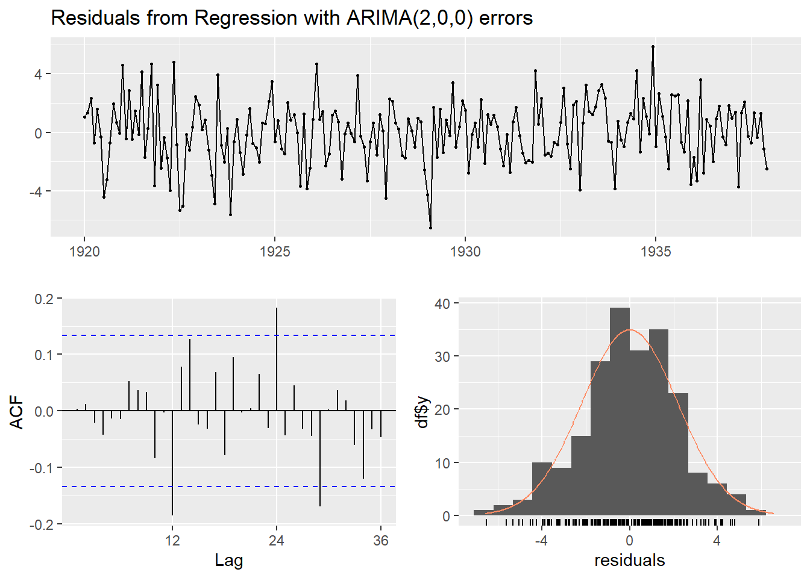
Ljung-Box test
data: Residuals from Regression with ARIMA(2,0,0) errors
Q* = 30.988, df = 22, p-value = 0.09636
Model df: 2. Total lags used: 24The residuals look like noise around zero with a fairly constant spread. Most of the ACF is inside the bounds, but lags 12, 24 and about 29 cross (about -0.18, 0.18 and -0.17). The Ljung-Box test on 24 lags gives Q = 30.99 with 22 degrees of freedom and p = 0.096, so there is no evidence of autocorrelation at the 5% level, although it is borderline at 10%. The spikes at lags 12 and 24 suggest the seasonal pattern may change a little from year to year, which a fixed harmonic model cannot capture. The histogram is close to the normal curve, so the normal prediction intervals look reasonable.
# SARIMA baseline: automatic selection on the same training set
fit_sarima <- forecast::auto.arima(y_train, seasonal = TRUE, approximation = FALSE)
tibble(model = as.character(fit_sarima), aicc = round(fit_sarima$aicc, 3)) |>
kable(caption = "SARIMA baseline. Its AICc is not comparable with the harmonic regression if the series is differenced.")| model | aicc |
|---|---|
| ARIMA(0,0,2)(1,1,1)[12] | 937.11 |
# forecast the 24 held-out months from both models
fc_hr <- forecast::forecast(fit_hr, xreg = forecast::fourier(y_train, K = K_best, h = h_test))
fc_sarima <- forecast::forecast(fit_sarima, h = h_test)# training and test accuracy for both models
acc_row <- function(fc, name) {
as_tibble(forecast::accuracy(fc, y_test), rownames = "set") |>
mutate(model = name, .before = 1) |>
select(model, set, RMSE, MAE, MAPE, MASE)
}
bind_rows(
acc_row(fc_hr, "harmonic regression + ARMA errors"),
acc_row(fc_sarima, "SARIMA")
) |>
mutate(across(where(is.numeric), \(x) round(x, 3))) |>
kable(caption = "Forecast accuracy on the training set and the 24-month test set.")| model | set | RMSE | MAE | MAPE | MASE |
|---|---|---|---|---|---|
| harmonic regression + ARMA errors | Training set | 2.184 | 1.734 | 3.718 | 0.623 |
| harmonic regression + ARMA errors | Test set | 2.348 | 1.690 | 3.564 | 0.607 |
| SARIMA | Training set | 2.192 | 1.708 | 3.664 | 0.614 |
| SARIMA | Test set | 2.359 | 1.802 | 3.813 | 0.647 |
Both models do about equally well on the test set. The harmonic regression has a slightly lower RMSE (2.348 against 2.359°F), MAE (1.690 against 1.802), MAPE (3.56% against 3.81%) and MASE (0.607 against 0.647). The differences are small compared with the size of the errors, and with only 24 test months they could easily be due to chance. Both models have similar errors on the training and test sets (RMSE about 2.2 against 2.35), so neither seems to overfit. The plot shows that both forecasts follow the seasonal cycle closely, and their biggest misses are at the summer peaks, where in 1938 both forecast too high.
# point forecasts from both models against the held-out observations
autoplot(window(temp_ts, start = c(1934, 1))) +
autolayer(fc_hr, PI = FALSE, series = "harmonic regression") +
autolayer(fc_sarima, PI = FALSE, series = "SARIMA") +
labs(title = "24-month forecasts against observed temperature", x = "year", y = "degrees Fahrenheit", colour = "model")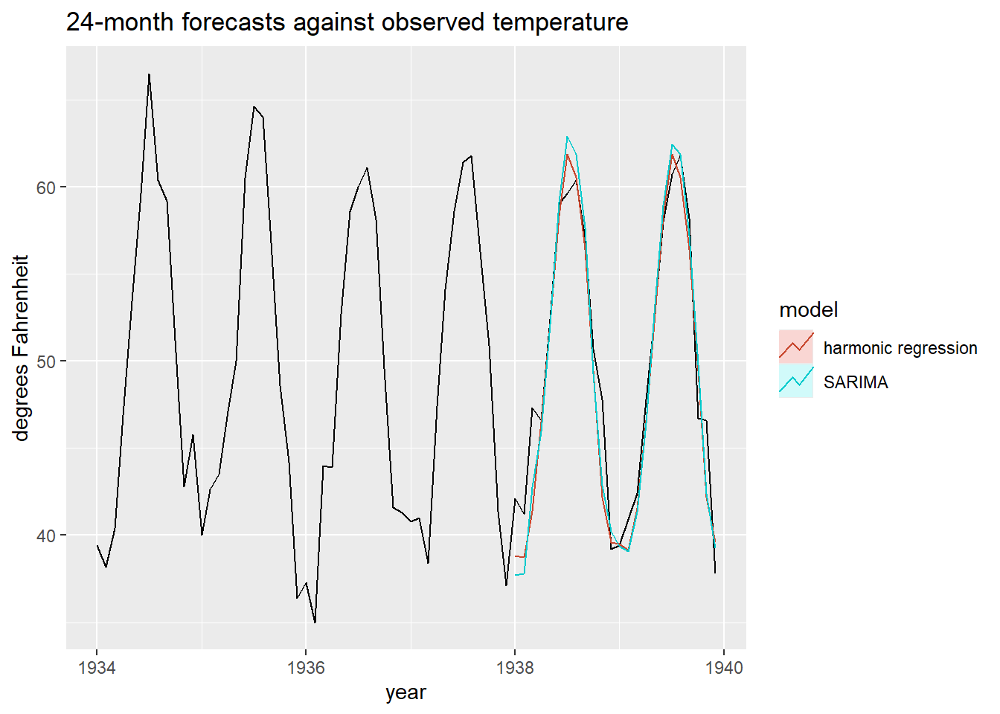
# 95% prediction intervals from both models, compared by width and test-set coverage
pi_row <- function(fc, name) {
tibble(model = name,
mean_width_95 = mean(fc$upper[, "95%"] - fc$lower[, "95%"]),
coverage_95 = mean(y_test >= fc$lower[, "95%"] & y_test <= fc$upper[, "95%"])
)
}
bind_rows(
pi_row(fc_hr, "harmonic regression + ARMA errors"),
pi_row(fc_sarima, "SARIMA")
) |>
mutate(across(where(is.numeric), \(x) round(x, 3))) |>
kable(caption = "Width and empirical coverage of the 95% prediction intervals on the test set.")| model | mean_width_95 | coverage_95 |
|---|---|---|
| harmonic regression + ARMA errors | 9.121 | 0.917 |
| SARIMA | 9.342 | 0.958 |
The two models give similar 95% prediction intervals, with average widths of 9.1°F for the harmonic regression and 9.3°F for the SARIMA. The harmonic regression intervals cover 22 of the 24 test months (91.7%) and the SARIMA intervals cover 23 (95.8%). With only 24 months, one month changes the coverage by about 4 percentage points, so both are consistent with the 95% target and this does not separate the models.
Nottingham temperatures have a strong, regular yearly cycle, and a harmonic regression with a few Fourier terms and AR(2) errors describes it well. Most of the cycle is captured by the first harmonic, with a smaller second harmonic. On the 24 test months the harmonic regression forecasts as well as a SARIMA model, slightly better on every accuracy measure, with similar prediction intervals, and it is simpler to interpret.
There are some limitations. There is only one 24-month test window, so the comparison rests on very few forecasts. AICc can compare the harmonic regressions with each other but not with the SARIMA, because the SARIMA uses a seasonal difference. The harmonic model also assumes the seasonal shape is the same every year, and the residual spikes at lags 12 and 24 suggest it may change a little.
Harmonic regression is most useful when the seasonal period is long or not a whole number, such as 52.18 weeks in weekly data or 365.25 days in daily data, where SARIMA is impractical. It did not suit the bond yield, because the yield has no seasonal pattern for the harmonic terms to describe.
y_ts <- ts(za_tbl$yield, start = c(year(start_date), month(start_date)), frequency = 12)
dy_ts <- diff(y_ts)
plot(dy_ts, las = 1, xlab = "Year", ylab = "Change in yield (percentage points)")
abline(h = 0, col = "grey")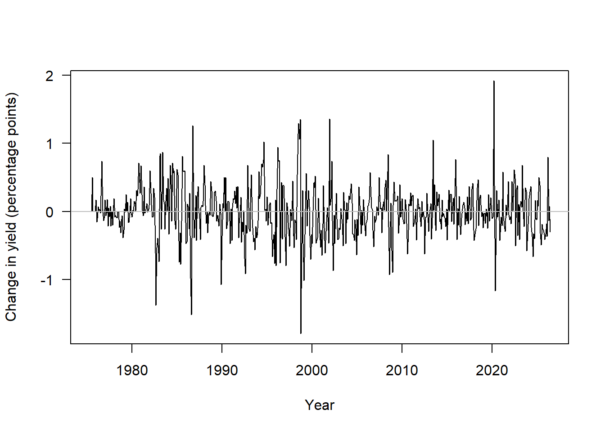
hist(dy_ts, breaks = 60, freq = FALSE, las = 1, main = "",
xlab = "Change in yield (percentage points)")
curve(dnorm(x, mean(dy_ts), sd(dy_ts)), add = TRUE, lwd = 2, col = "red")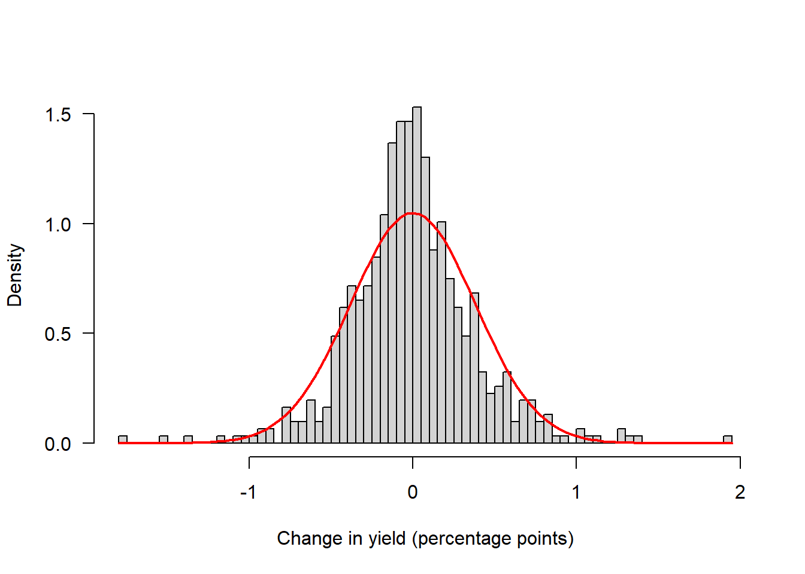
The histogram is taller in the middle and has longer tails than the fitted normal curve. There are more small changes near zero and more very large changes (beyond about 1 percentage point either way) than a normal distribution with the same mean and standard deviation would give. Together with the volatility clustering in the EDA and in Project 2, this suggests the changes come from a mix of calm and volatile periods. A hidden Markov model with a normal distribution in each state is a mixture of normals that switches over time, so it can produce this shape.
n_test <- 24
y_all <- as.numeric(dy_ts)
n <- length(y_all)
nx_train <- n - n_test
x_train <- y_all[1:nx_train]
x_test <- y_all[(nx_train + 1):n]
t_all <- as.numeric(time(dy_ts))Means are unconstrained, and the off-diagonal entries of \(\Gamma\) use a multinomial logit with the diagonal as reference. \(\delta\) is the stationary distribution of \(\Gamma\). Each standard deviation is estimated as a small floor plus an exponential, \(\sigma_i = 0.05 + e^{w_i}\), so it can never go below 0.05 percentage points.
The floor is needed because a normal likelihood has no upper limit when one state has a mean exactly equal to an observation and a standard deviation shrinking to zero. The early part of the sample still has months with no change at all (10% of months in 1975-85), so without the floor the fit puts these months in their own state with a mean of 0 and a standard deviation of 0. My first fit did exactly this: one state had a standard deviation of 0.0000, nlm stopped with code 3 rather than converging, and the log-likelihood (-70.8) was far above that of the depmixS4 fit (-197.2). A floor of 0.05 is far below the standard deviation of a calm month (about 0.25), so it only rules out this degenerate solution and should not affect a sensible fit.
# smallest allowed state standard deviation (percentage points)
sigma_min <- 0.05
n2w <- function(mu, sigma, gamma) {
m <- length(mu)
tgamma <- NULL
if (m > 1) {
# divides row i by gamma_ii
tgamma <- log(gamma / diag(gamma))
tgamma <- tgamma[!diag(m)]
}
c(mu, log(sigma - sigma_min), tgamma)
}
w2n <- function(par, m) {
mu <- par[1:m]
sigma <- sigma_min + exp(par[(m + 1):(2 * m)])
gamma <- diag(m)
if (m > 1) {
gamma[!gamma] <- exp(par[(2 * m + 1):(m * (m + 1))])
gamma <- gamma / rowSums(gamma)
}
delta <- if (m > 1) solve(t(diag(m) - gamma + 1), rep(1, m)) else 1
list(mu = mu, sigma = sigma, gamma = gamma, delta = delta)
}hmm_nll <- function(par, x, m) {
p <- w2n(par, m)
phi <- p$delta
ll <- 0
for (t in seq_along(x)) {
v <- phi %*% p$gamma * dnorm(x[t], p$mu, p$sigma)
u <- sum(v)
ll <- ll + log(u)
phi <- v / u
}
-ll
}States are relabelled in order of increasing standard deviation, so state 1 is always the calmest.
fit_hmm <- function(x, m, n_starts = 20) {
best <- NULL
for (s in 1:n_starts) {
mu0 <- rnorm(m, mean(x), sd(x) / 10)
sigma0 <- sd(x) * exp(runif(m, -1.5, 1))
g0 <- matrix(1)
if (m > 1) {
d <- runif(m, 0.7, 0.98)
g0 <- (1 - d) / (m - 1) * matrix(1, m, m)
diag(g0) <- d
}
out <- tryCatch(nlm(hmm_nll, n2w(mu0, sigma0, g0), x = x, m = m,
iterlim = 1000),
error = function(e) NULL)
if (!is.null(out) && (is.null(best) || out$minimum < best$minimum)) {
best <- out
}
}
p <- w2n(best$estimate, m)
ord <- order(p$sigma)
list(mu = p$mu[ord], sigma = p$sigma[ord], gamma = p$gamma[ord, ord, drop = FALSE],
delta = p$delta[ord], nll = best$minimum, k = m * (m + 1), code = best$code)
}set.seed(2026)
hmm_fits <- lapply(1:3, function(m) fit_hmm(x_train, m))
sel <- data.frame(m = 1:3,
k = sapply(hmm_fits, `[[`, "k"),
logLik = -sapply(hmm_fits, `[[`, "nll"),
code = sapply(hmm_fits, `[[`, "code"))
sel$AIC <- -2 * sel$logLik + 2 * sel$k
sel$BIC <- -2 * sel$logLik + log(nx_train) * sel$k
sel |>
mutate(across(c(logLik, AIC, BIC), \(x) round(x, 2))) |>
kable(caption = "Number of states: log-likelihood, AIC and BIC. code is the nlm convergence code (1 or 2 indicates probable convergence).")| m | k | logLik | code | AIC | BIC |
|---|---|---|---|---|---|
| 1 | 2 | -268.56 | 1 | 541.12 | 549.88 |
| 2 | 6 | -206.24 | 1 | 424.49 | 450.78 |
| 3 | 12 | -194.96 | 1 | 413.92 | 466.50 |
BIC chooses 2 states (450.8, against 466.5 for 3 states and 549.9 for 1), so the code uses 2 states from here on. AIC does not agree and prefers 3 states (413.9 against 424.5). The third state adds 6 parameters for a log-likelihood gain of about 11, which is enough for AIC but not for BIC, because BIC penalises extra parameters more heavily with 591 observations. All three fits converged (code 1). Going from 1 to 2 states improves the log-likelihood by about 62, so there is strong evidence for at least two regimes.
# keep the number of states with the lowest BIC
m_hat <- sel$m[which.min(sel$BIC)]
hmm_fit <- hmm_fits[[m_hat]]
tibble(state = 1:m_hat, mean = hmm_fit$mu, sd = hmm_fit$sigma, stationary_prob = hmm_fit$delta) |>
mutate(across(-state, \(x) round(x, 4))) |>
kable(caption = "State-dependent means and standard deviations (percentage points), and the stationary distribution.")| state | mean | sd | stationary_prob |
|---|---|---|---|
| 1 | 0.0014 | 0.2353 | 0.6654 |
| 2 | 0.0081 | 0.5654 | 0.3346 |
gamma_tbl <- round(hmm_fit$gamma, 4)
dimnames(gamma_tbl) <- list(paste("from state", 1:m_hat), paste("to state", 1:m_hat))
kable(gamma_tbl, caption = "Estimated transition probability matrix.")| to state 1 | to state 2 | |
|---|---|---|
| from state 1 | 0.9593 | 0.0407 |
| from state 2 | 0.0809 | 0.9191 |
The two states have almost the same mean, 0.001 and 0.008 percentage points, so they do not differ in direction. They differ in volatility: state 1 is calm, with a standard deviation of 0.24 percentage points, and state 2 is volatile, with 0.57, more than twice as large. Both states are persistent. The chance of staying in the calm state from one month to the next is 0.96, so a calm spell lasts 1 / (1 - 0.9593) ≈ 25 months on average. For the volatile state it is 0.92, so a volatile spell lasts about 12 months. In the long run the yield spends about two thirds of the time in the calm state (0.665) and one third in the volatile state (0.335).
viterbi_norm <- function(x, fit) {
m <- length(fit$mu)
n <- length(x)
lg <- log(fit$gamma)
lp <- outer(x, 1:m, function(x, i) dnorm(x, fit$mu[i], fit$sigma[i], log = TRUE))
xi <- matrix(0, n, m)
xi[1, ] <- log(fit$delta) + lp[1, ]
for (t in 2:n) {
for (j in 1:m) {
xi[t, j] <- max(xi[t - 1, ] + lg[, j]) + lp[t, j]
}
}
s <- numeric(n)
s[n] <- which.max(xi[n, ])
for (t in (n - 1):1) {
s[t] <- which.max(xi[t, ] + lg[, s[t + 1]])
}
s
}
vit <- viterbi_norm(x_train, hmm_fit)log_fb <- function(x, fit) {
m <- length(fit$mu)
n <- length(x)
P <- outer(x, 1:m, function(x, i) dnorm(x, fit$mu[i], fit$sigma[i]))
la <- lb <- matrix(0, n, m)
phi <- fit$delta * P[1, ]
lscale <- log(sum(phi))
phi <- phi / sum(phi)
la[1, ] <- lscale + log(phi)
for (t in 2:n) {
phi <- phi %*% fit$gamma * P[t, ]
lscale <- lscale + log(sum(phi))
phi <- phi / sum(phi)
la[t, ] <- lscale + log(phi)
}
# beta_T = 1, stored as phi = 1/m with log scale log(m)
phi <- rep(1 / m, m)
lscale <- log(m)
for (t in (n - 1):1) {
phi <- fit$gamma %*% (P[t + 1, ] * phi)
lb[t, ] <- log(phi) + lscale
lscale <- lscale + log(sum(phi))
phi <- phi / sum(phi)
}
list(la = la, lb = lb)
}
state_probs <- function(x, fit) {
fb <- log_fb(x, fit)
la_n <- fb$la[length(x), ]
llk <- max(la_n) + log(sum(exp(la_n - max(la_n))))
exp(fb$la + fb$lb - llk)
}
smooth_probs <- state_probs(x_train, hmm_fit)state_cols <- c("steelblue", "orange", "red")[1:m_hat]
t_train <- t_all[1:nx_train]
plot(t_train, x_train, type = "l", col = "grey", las = 1,
xlab = "Year", ylab = "Change in yield (percentage points)")
points(t_train, x_train, pch = 19, cex = 0.5, col = state_cols[vit])
legend("topright", legend = paste("State", 1:m_hat), col = state_cols,
pch = 19, bty = "n")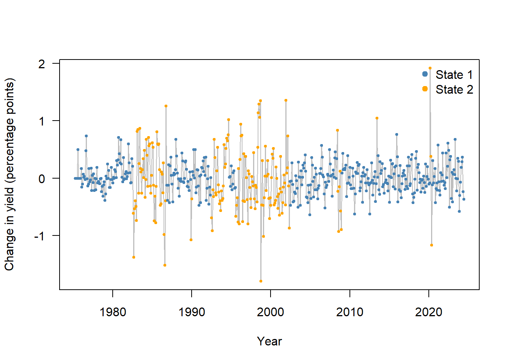
matplot(t_train, smooth_probs, type = "l", lty = 1, lwd = 1.5,
col = state_cols, las = 1, ylim = c(0, 1),
xlab = "Year", ylab = "P(state | all training data)")
legend("topright", legend = paste("State", 1:m_hat), col = state_cols,
lty = 1, bty = "n")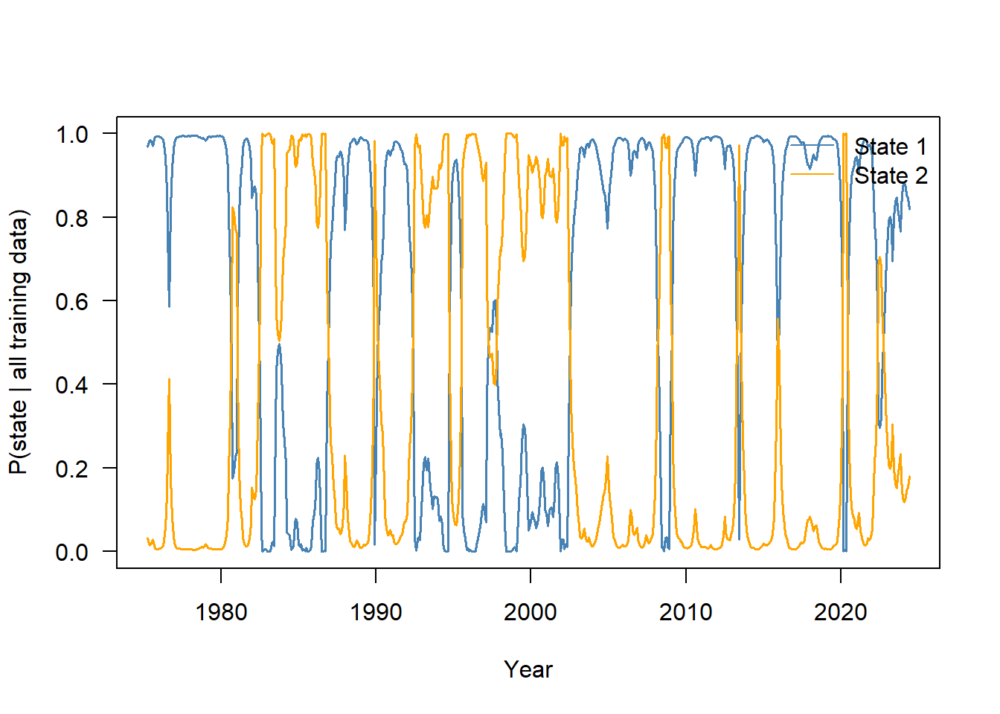
The calm state covers most of 1975 to 1981, most of 1987 to 1991, and almost all of the time from 2003 onwards. The volatile state covers most of 1982 to 1987, around the debt standstill, several shorter spells in the early 1990s, and most of 1995 to 2002, including the 1998 peak. After 2003 the model only moves into the volatile state for short spells, around the 2008 financial crisis, in 2013 and in 2020. This matches the rolling standard deviation in the EDA, which is highest in the mid-1980s and the late 1990s and lower after inflation targeting began. The smoothed probabilities are mostly close to 0 or 1, so the model is usually quite sure which state it is in. The exceptions are short periods such as the early 1990s and 2022, where the probabilities are in between.
The h-step forecast distribution is a normal mixture with weights \(\phi_T \Gamma^h\), where \(\phi_T\) are the filtered state probabilities at the end of the training period.
filter_probs <- function(x, fit) {
la <- log_fb(x, fit)$la
# subtract each row's maximum before exponentiating
f <- exp(la - apply(la, 1, max))
f / rowSums(f)
}
mix_quantile <- function(p, w, mu, sigma) {
f <- function(q) sum(w * pnorm(q, mu, sigma)) - p
uniroot(f, range(mu) + c(-10, 10) * max(sigma))$root
}
fc_hmm <- function(fit, phi, h_max, level = 0.95) {
a <- (1 - level) / 2
w <- phi
out <- matrix(NA, h_max, 3, dimnames = list(NULL, c("mean", "lower", "upper")))
for (h in 1:h_max) {
w <- w %*% fit$gamma
out[h, ] <- c(sum(w * fit$mu),
mix_quantile(a, w, fit$mu, fit$sigma),
mix_quantile(1 - a, w, fit$mu, fit$sigma))
}
out
}
filt_all <- filter_probs(y_all, hmm_fit)
hmm_fc <- fc_hmm(hmm_fit, filt_all[nx_train, ], n_test)
iid_fc <- fc_hmm(hmm_fits[[1]], 1, n_test)t_test <- t_all[(nx_train + 1):n]
t_recent <- t_all > 2018
plot(t_all[t_recent], y_all[t_recent], type = "l", las = 1,
ylim = range(y_all[t_recent], hmm_fc, iid_fc),
xlab = "Year", ylab = "Change in yield (percentage points)")
lines(t_test, hmm_fc[, "mean"], col = "red", lwd = 2)
lines(t_test, hmm_fc[, "lower"], col = "red", lty = 2)
lines(t_test, hmm_fc[, "upper"], col = "red", lty = 2)
lines(t_test, iid_fc[, "lower"], col = "steelblue", lty = 3)
lines(t_test, iid_fc[, "upper"], col = "steelblue", lty = 3)
abline(v = t_test[1], col = "grey")
legend("topleft", legend = c(paste0(m_hat, "-state HMM"), "1-state (iid normal)"),
col = c("red", "steelblue"), lty = c(2, 3), bty = "n")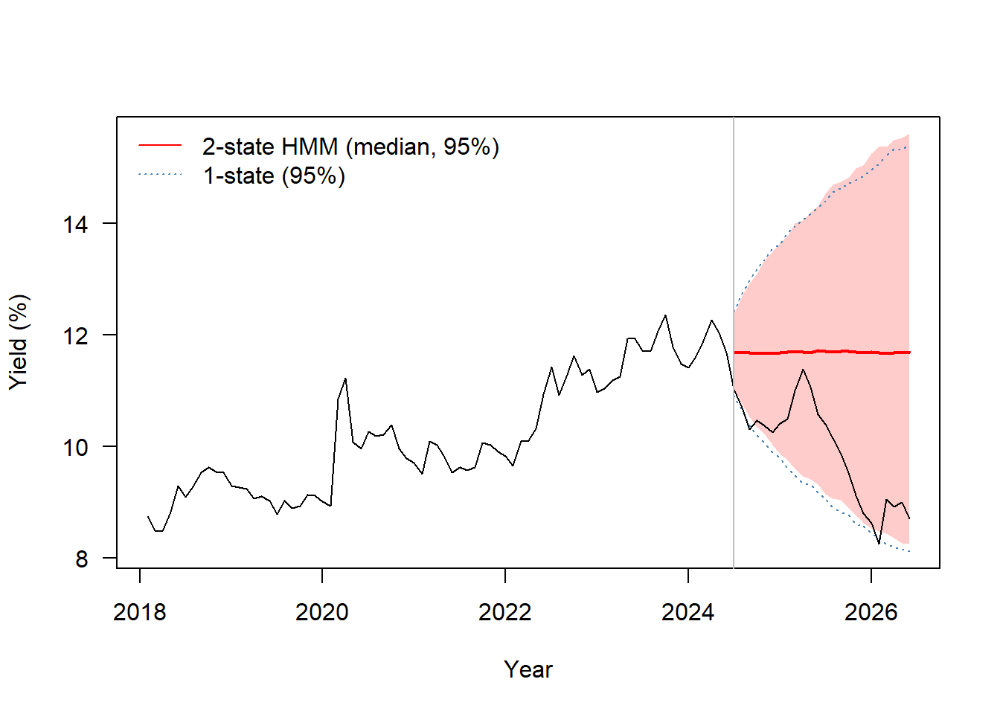
Parameters are held at their training estimates. The filter is updated with each new observation, and each one-step forecast is compared with the next observed change. Coverage is of the 95% interval; the log score is the mean log predictive density.
one_step_eval <- function(fit, filt) {
res <- t(sapply(nx_train:(n - 1), function(t) {
w <- filt[t, ] %*% fit$gamma
c(fc_hmm(fit, filt[t, ], 1),
log(sum(w * dnorm(y_all[t + 1], fit$mu, fit$sigma))))
}))
c(coverage = mean(x_test >= res[, 2] & x_test <= res[, 3]),
mean_width = mean(res[, 3] - res[, 2]),
log_score = mean(res[, 4]))
}
rbind(hmm = one_step_eval(hmm_fit, filt_all),
iid_normal = one_step_eval(hmm_fits[[1]], filter_probs(y_all, hmm_fits[[1]]))) |>
round(4) |>
kable(caption = "One-step-ahead evaluation on the test months: coverage of the 95% interval, mean interval width and mean log score.")| coverage | mean_width | log_score | |
|---|---|---|---|
| hmm | 0.9583 | 1.5918 | -0.5379 |
| iid_normal | 0.9583 | 1.4941 | -0.3859 |
Both models cover 23 of the 24 test months (95.8%), so they do equally well on coverage. The HMM intervals are wider on average (1.59 against 1.49 percentage points) and its log score is worse (-0.538 against -0.386), so on these test months the HMM forecasts worse than the iid normal model. A likely reason is that volatility in the test period (about 0.33 since 2022, from the EDA) sits between the two states. When the filter puts the model in the calm state (standard deviation 0.24), the larger changes, such as the rise of about 0.8 in early 2026, get a very low predicted probability, and this pulls the log score down. With only 24 test months this is weak evidence either way, but it does not support the idea that the regime model forecasts better.
sim_paths <- function(fit, phi, h_max, n_sim, y0) {
m <- length(fit$mu)
paths <- matrix(NA, n_sim, h_max)
for (s in 1:n_sim) {
state <- sample(1:m, 1, prob = phi)
level <- y0
for (h in 1:h_max) {
state <- sample(1:m, 1, prob = fit$gamma[state, ])
level <- level + rnorm(1, fit$mu[state], fit$sigma[state])
paths[s, h] <- level
}
}
paths
}
set.seed(2026)
y_levels <- as.numeric(y_ts)
y0 <- y_levels[nx_train + 1]
band <- apply(sim_paths(hmm_fit, filt_all[nx_train, ], n_test, 5000, y0), 2,
quantile, c(0.025, 0.5, 0.975))
band1 <- apply(sim_paths(hmm_fits[[1]], 1, n_test, 5000, y0), 2,
quantile, c(0.025, 0.5, 0.975))t_levels <- as.numeric(time(y_ts))
recent <- t_levels > 2018
plot(t_levels[recent], y_levels[recent], type = "l", las = 1,
ylim = range(y_levels[recent], band, band1),
xlab = "Year", ylab = "Yield (%)")
polygon(c(t_test, rev(t_test)), c(band[1, ], rev(band[3, ])),
col = adjustcolor("red", 0.2), border = NA)
lines(t_test, band[2, ], col = "red", lwd = 2)
lines(t_test, band1[1, ], col = "steelblue", lty = 3)
lines(t_test, band1[3, ], col = "steelblue", lty = 3)
lines(t_levels[recent], y_levels[recent])
abline(v = t_test[1], col = "grey")
legend("topleft", legend = c(paste0(m_hat, "-state HMM (median, 95%)"), "1-state (95%)"),
col = c("red", "steelblue"), lty = c(1, 3), bty = "n")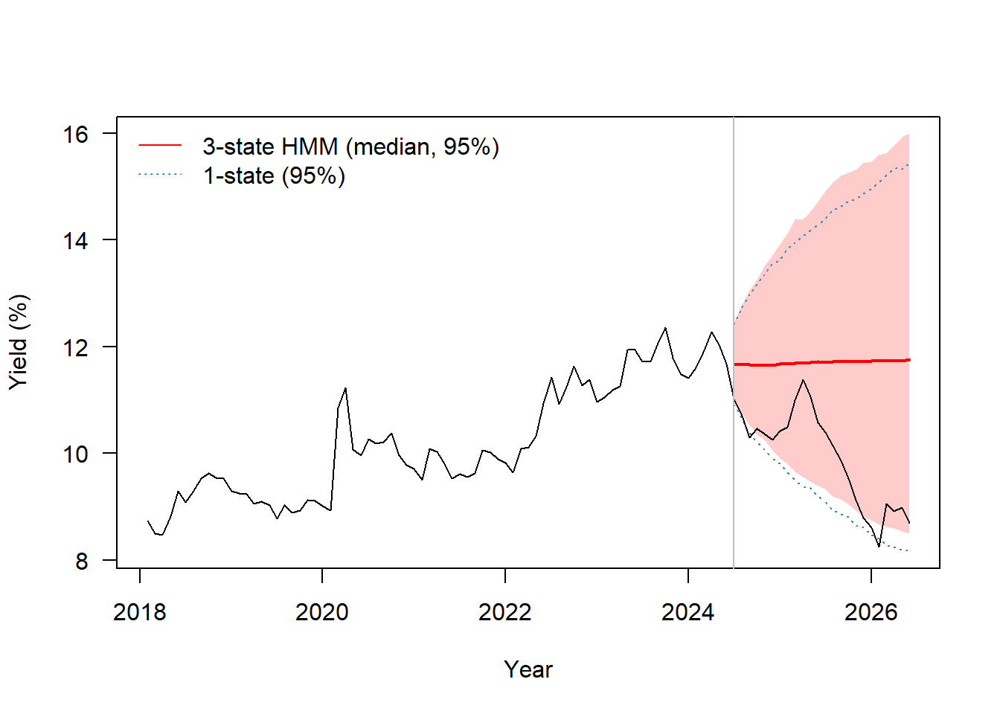
The HMM median forecast stays flat at about 11.7%, because both states have a mean change close to zero. The 95% band widens over time, from about 1.5 percentage points wide at one month to about 7 percentage points (about 8.4% to 15.5%) at 24 months. It is almost the same as the band from the iid normal model, because over two years the HMM moves towards its long-run mix of states, whose overall standard deviation (about 0.38) is the same as that of the iid model. The actual yield fell from about 11.7% to about 8.3% by early 2026, which is near the lower edge of both bands. Neither model expected a fall this big, but both treat it as possible.
depmixS4 estimates the initial distribution freely rather than setting it to the stationary distribution, so the log-likelihoods should be close but not identical. State labels may differ, so compare the Viterbi paths with a cross-table.
library(depmixS4)
set.seed(1)
mod <- depmix(dy_ts ~ 1, data = data.frame(dy_ts = x_train), nstates = m_hat,
family = gaussian())
fm <- fit(mod, verbose = FALSE)converged at iteration 57 with logLik: -205.8606 tibble(fit = c("own", "depmixS4"), logLik = c(-hmm_fit$nll, as.numeric(logLik(fm)))) |>
kable(caption = "Log-likelihood of the two fits.")| fit | logLik |
|---|---|
| own | -206.2435 |
| depmixS4 | -205.8606 |
summary(fm)Initial state probabilities model
pr1 pr2
0 1
Transition matrix
toS1 toS2
fromS1 0.921 0.079
fromS2 0.042 0.958
Response parameters
Resp 1 : gaussian
Re1.(Intercept) Re1.sd
St1 0.008 0.564
St2 0.001 0.235table(own = vit, depmixS4 = fm@posterior$state) depmixS4
own 1 2
1 0 418
2 173 0The two fits agree very closely. The state means, standard deviations and transition probabilities are the same to two decimal places once the labels are swapped (depmixS4’s state 1 is my state 2). The Viterbi paths agree in all 591 training months: the cross-table has 418 and 173 months on its off-diagonal, which are the same states under swapped labels, and no disagreements. depmixS4’s log-likelihood is slightly higher (-205.86 against -206.24), which is expected because it estimates the initial distribution freely instead of fixing it at the stationary distribution. This also shows that the standard deviation floor does not affect the 2-state fit, since depmixS4 has no floor and gets the same answer.
Monthly yield changes are well described by two regimes with the same average change but different volatility: a calm regime that the yield is in about two thirds of the time and a volatile regime with more than twice the standard deviation. The regimes are persistent, lasting about 25 and 12 months on average, and the volatile regime matches the mid-1980s and late 1990s. However, the HMM did not forecast better than a simple iid normal model on the 24 test months.
There are some limitations. Each state assumes normal changes with no autocorrelation, but Projects 1 and 2 found an MA(1) in the changes, so the model leaves this out. The parameters were held at their training values over the test period, and 24 test months are too few to compare the forecasts with much confidence. AIC and BIC disagree on the number of states, so the choice of 2 is not clear-cut. Finally, the standard deviation floor was needed to stop the 3-state fit from collapsing onto the months with no change.
The HMM and the GARCH model in Project 2 give two different views of the same changing volatility. In the GARCH model volatility moves smoothly from month to month, jumping after each big shock and fading with a half-life of about 7.5 months. In the HMM volatility switches between two fixed levels and stays there for a year or more. Both point to the same volatile periods: the mid-1980s, the late 1990s and short spells such as 2020. The GARCH model can represent levels in between, like the moderate volatility since 2022, which the 2-state HMM cannot. This may be why the HMM forecast poorly in the test period, and why AIC prefers a third state.
The four projects fit together as follows. Project 1 shows that the yield behaves almost like a random walk. A small MA(1) effect helps one month ahead, but after that the naive forecast is as good as anything else. Its prediction intervals assume a constant variance, and the residuals show that this is not true, because big changes cluster together in certain periods. This is what Project 2 picks up. The same MA(1) appears in its mean model (0.31, against 0.34 in Project 1), and a GARCH(1,1) with Student t errors removes the ARCH effects and shows volatility jumping after big shocks and then fading, with a half-life of about 7.5 months.
Project 4 looks at the same changing volatility in a different way. Instead of volatility that moves smoothly from month to month, the HMM switches between a calm and a volatile regime that each last a year or more. The two models agree on when the yield was volatile: the mid-1980s, the late 1990s and short spells such as 2020. This suggests these periods come from the data rather than from the assumptions of one model. Where they differ is in how volatility changes. GARCH allows any level in between, while the 2-state HMM only has two levels. In the test period this mattered, because volatility since 2022 has been moderate and the HMM did not forecast better than an iid normal model.
Project 3 uses a different series. On the Nottingham temperatures, which have a strong yearly cycle, it forecasts as well as a SARIMA model while being simpler to interpret.
Taken together, the projects say that the level of the yield is hard to forecast beyond one month, and that most of what can be modelled is in its volatility rather than its direction. The regime model does not improve the forecast capacity. The most useful next step would be to combine the ARIMA mean from Project 1 with the GARCH variance from Project 2. The forecast of the level would then stay close to a random walk, but the prediction intervals would widen and narrow with volatility.
Here I did some of the questions as they were in the various exercises and tutorial packs. The heading of that section of that tutorial is the same as in the uploaded version on amathuba.
Problem definition. Establish what the forecasts are for and who will use them. For a biscuit manufacturer this is likely production scheduling, purchasing of raw materials (flour, sugar, chocolate, packaging), inventory and distribution planning, and budgeting. This determines which products are forecast, the level of aggregation (individual SKU, product family, region or retailer), the forecast horizon (weeks for production runs, months for procurement, a year or more for capacity and budgets), how often forecasts are updated, and how accurate they need to be. It requires discussion with production, sales, marketing and finance staff.
Data collection. Gather historical sales for each product at the frequency and aggregation chosen above, ideally covering several years so that seasonal patterns can be estimated. Decide whether to use orders, shipments or retail sales, since shipments can understate true demand during stock-outs. Collect related information that may explain sales: prices, promotions, advertising, public holidays and festive periods, product launches and discontinuations, and competitor activity. Expert knowledge from the sales team about planned promotions or contracts is also data. Check for errors, gaps and changes in definitions.
Data analysis. Plot each series and look for trend, seasonality (for example peaks before Christmas and Easter), cycles, outliers, and structural breaks such as a product relaunch or a lost retail contract. Examine autocorrelation and relationships between sales and explanatory variables such as price or promotions, and between products (cannibalisation). Decide whether a transformation is needed, for example logs if variability grows with the level of sales. The feedback arrow in Figure 1 reflects that this step is revisited when fitted models reveal something missed.
Model selection and fitting. Using what the analysis showed, choose candidate models: simple benchmarks (naive, seasonal naive), moving averages, exponential smoothing (for example Holt-Winters for trend and seasonality), ARIMA or SARIMA models, or regression models with promotion and price effects. Because there are several products, methods that can be applied systematically across many series are attractive. Estimate the parameters of each candidate on the training data.
Model validation. Assess how well each model forecasts data it was not fitted to, using a hold-out test set or rolling-origin evaluation. Compare accuracy measures such as MAE, RMSE, MAPE or MASE, including against the benchmark methods. Check the residuals: they should look like uncorrelated noise with mean zero (for example using the residual ACF and a Ljung-Box test). Also check whether prediction intervals have roughly the stated coverage. Select the model or models to use.
Forecasting model deployment. Put the chosen model into routine use: refit it on all available data, produce point forecasts and prediction intervals at the required horizon and frequency, and deliver them in a form the planners can use, ideally integrated with the company’s planning systems. Document the method and assumptions, and allow for judgemental adjustment where planners know of future events the model cannot see, such as a planned promotion.
Monitoring forecasting model performance. As actual sales arrive, compare them to the forecasts and track the errors over time to detect bias or declining accuracy. Changes in consumer tastes, pricing, competitors or distribution can make a model inadequate. When performance deteriorates, re-estimate or re-specify the model, which returns the process to earlier stages.
Monthly computer hard drive sales, 10 years, local store. A trend is likely: growth as computer use increased, possibly followed by decline as solid-state drives and cloud storage replaced hard drives. Annual seasonality is likely, with peaks around the start of the academic year and the end-of-year festive and Black Friday period. Some cyclical behaviour linked to economic conditions is also possible.
Hourly pulse rate, one week. No long-term trend. A strong daily (24-hour) pattern is expected: lower during sleep and higher during waking hours. There will be short-lived spikes from exercise or stress and strong autocorrelation between adjacent hours. A weekday versus weekend difference may exist, but one week of data is too short to estimate a weekly pattern.
Daily fast-food sales, six months. A strong weekly seasonal pattern is expected, with higher sales on particular days such as Fridays and weekends. There may be a trend over the period, and effects from public holidays, school holidays, paydays and promotions. Annual seasonality cannot be identified from six months; part of it may appear as a trend.
Weekly electricity consumption, local area, 10 years. Strong annual seasonality driven by heating in winter and cooling in summer (with a period of about 52.18 weeks, which is not an integer). A trend is possible, upward from population and economic growth or downward from efficiency improvements and rooftop solar. Dips over the Christmas and New Year period, and irregular variation from unusual weather, are also expected.
Time plot. The series does not fluctuate around a constant mean. It rises from about 460 to about 600 over the first 110 or so days, drifts down, then falls sharply to about 310 around days 240 to 270 before levelling off near 350 to 400. These long runs and level shifts, with no tendency to return to a fixed level, are typical of a random walk rather than a stationary process.
ACF. The autocorrelations are close to 1 at lag 1 and decay very slowly, roughly linearly, remaining around 0.8 at lag 25 and far outside the significance bounds. For a stationary series the ACF should decay to zero fairly quickly. Slow decay of this kind indicates non-stationarity.
PACF. There is a single large spike at lag 1 with a value close to 1, and the remaining partial autocorrelations are essentially within the bounds. This is consistent with an AR(1) process with coefficient close to 1, that is, a unit root.
Conclusion. Together the plots indicate that the series is non-stationary in the mean and that first differencing, \(y'_t = y_t - y_{t-1}\), is appropriate. The differenced series (daily price changes) would be expected to look approximately like white noise. A unit root test such as ADF or KPSS could be used to support this formally.
Reflection: what you learned, what was difficult, and how it fed into the projects
Brief statement of each question
library(fpp2)Own implementation of SES. ses_onestep() runs the recursion \(\hat{y}_{t+1|t} = \alpha y_t + (1 - \alpha)\hat{y}_{t|t-1}\) with \(\hat{y}_{1|0} = \ell_0\) and returns all one-step-ahead forecasts, the last of which is the forecast of the next observation.
ses_onestep <- function(y, alpha, level) {
n <- length(y)
yhat <- numeric(n + 1)
yhat[1] <- level
for (t in 1:n) yhat[t + 1] <- alpha * y[t] + (1 - alpha) * yhat[t]
yhat
}
ses_fc <- function(y, alpha, level) {
tail(ses_onestep(y, alpha, level), 1)
}
ses_sse <- function(par, y) {
yhat <- ses_onestep(y, par[1], par[2])
sum((y - yhat[seq_along(y)])^2)
}Estimate \(\alpha\) and \(\ell_0\) by minimising the SSE, and fit ses() for comparison.
est_m <- optim(c(0.5, marathon[1]), ses_sse, y = marathon)
fit_m <- ses(marathon, h = 1)
rbind(optim = est_m$par, ses = fit_m$model$par[c("alpha", "l")]) alpha l
optim 0.3456196 167.1677
ses 0.3457325 167.1741Forecast for 2017 from the own function (with the optim estimates and with the ses() estimates) against ses().
alpha_m <- unname(fit_m$model$par["alpha"])
l0_m <- unname(fit_m$model$par["l"])
c(own_optim = ses_fc(marathon, est_m$par[1], est_m$par[2]),
own_ses_par = ses_fc(marathon, alpha_m, l0_m),
ses = fit_m$mean[1]) own_optim own_ses_par ses
130.3559 130.3563 130.3563 Point forecast and 95% prediction interval for 2017 by hand, using \(\hat{\sigma} = \sqrt{SSE / (T - 2)}\) (two estimated parameters).
n_m <- length(marathon)
res_m <- marathon - ses_onestep(marathon, alpha_m, l0_m)[1:n_m]
sigma_m <- sqrt(sum(res_m^2) / (n_m - 2))
fc_m <- ses_fc(marathon, alpha_m, l0_m)
pi_m <- rbind(own = c(fc_m, fc_m + c(-1, 1) * qnorm(0.975) * sigma_m),
ses = c(fit_m$mean[1], fit_m$lower[1, "95%"], fit_m$upper[1, "95%"]))
colnames(pi_m) <- c("forecast", "lower", "upper")
pi_m forecast lower upper
own 130.3563 119.5394 141.1733
ses 130.3563 119.5394 141.1733plot(marathon, las = 1, ylab = "Winning time (minutes)", xlab = "Year")
lines(fitted(fit_m), col = "red")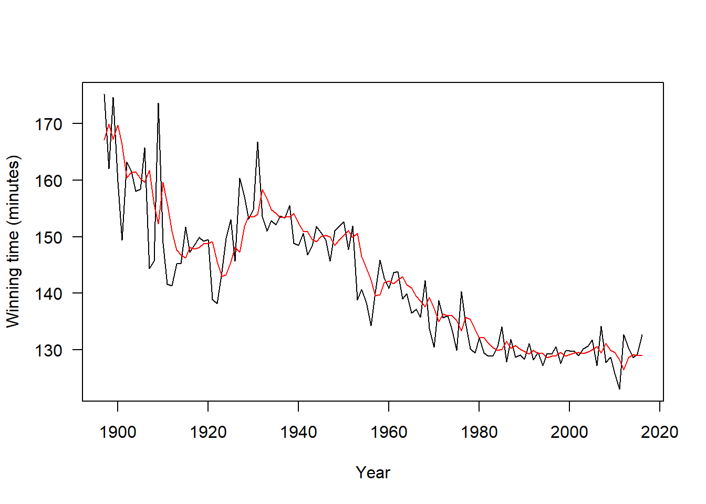
Estimate of \(\sigma\), by hand and from ses().
c(own = sigma_m, ses = sqrt(fit_m$model$sigma2)) own ses
5.518956 5.518956 Interpretation: do the own estimates and forecasts match ses(), and why might they differ slightly?
fit_o <- ses(oil, h = 4)
summary(fit_o)
Forecast method: Simple exponential smoothing
Model Information:
Simple exponential smoothing
Call:
ses(y = oil, h = 4)
Smoothing parameters:
alpha = 0.9999
Initial states:
l = 110.8832
sigma: 49.0507
AIC AICc BIC
576.1569 576.6903 581.8324
Error measures:
ME RMSE MAE MPE MAPE MASE ACF1
Training set 8.806147 48.03921 35.52053 2.135668 10.73828 0.9796835 0.1646214
Forecasts:
Point Forecast Lo 80 Hi 80 Lo 95 Hi 95
2014 542.3412 479.4802 605.2022 446.2037 638.4788
2015 542.3412 453.4468 631.2356 406.3890 678.2935
2016 542.3412 433.4701 651.2124 375.8372 708.8453
2017 542.3412 416.6287 668.0537 350.0805 734.601995% interval for the first forecast using \(\hat{y} \pm 1.96 s\) with \(s\) the standard deviation of the residuals, next to the interval from ses().
s_o <- sd(residuals(fit_o))
pi_o <- rbind(sd_resid = fit_o$mean[1] + c(-1, 1) * 1.96 * s_o,
ses = c(fit_o$lower[1, "95%"], fit_o$upper[1, "95%"]))
colnames(pi_o) <- c("lower", "upper")
pi_o lower upper
sd_resid 448.8206 635.8618
ses 446.2037 638.4788c(s = s_o, sigma_ses = sqrt(fit_o$model$sigma2), mean_resid = mean(residuals(fit_o))) s sigma_ses mean_resid
47.714576 49.050677 8.806147 Interpretation of the two intervals and the residual summaries
ses_sse() from Question 1 already returns the SSE, so it is passed straight to optim().
oil_sub <- window(oil, start = 1996, end = 2013)
est_o <- optim(c(0.5, oil_sub[1]), ses_sse, y = oil_sub)
fit_os <- ses(oil_sub)
rbind(optim = c(est_o$par, SSE = est_o$value),
ses = c(fit_os$model$par[c("alpha", "l")],
SSE = ses_sse(fit_os$model$par[c("alpha", "l")], oil_sub))) SSE
optim 0.8338729 446.5927 14235.59
ses 0.8338901 446.5868 14235.59Interpretation: comparison of the optim and ses() estimates and SSE
plot(books, main = "", las = 1, xlab = "Day")
ses_pb <- ses(books[, "Paperback"], h = 4)
ses_hc <- ses(books[, "Hardcover"], h = 4)
par(mfrow = c(1, 2))
plot(ses_pb, main = "Paperback: SES", las = 1, xlab = "Day")
plot(ses_hc, main = "Hardcover: SES", las = 1, xlab = "Day")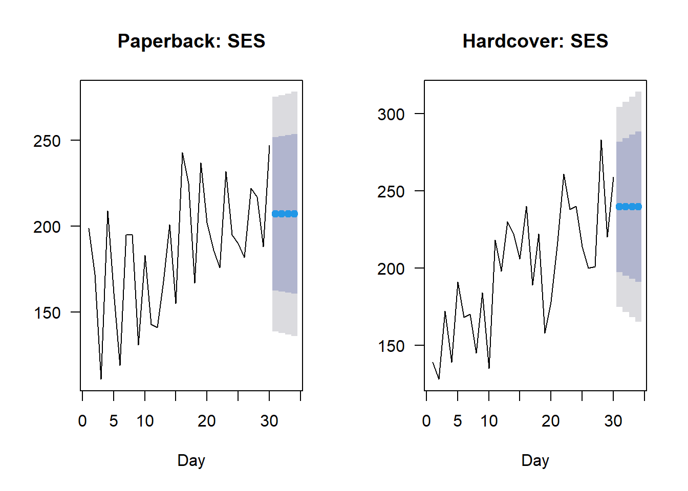
c(paperback = accuracy(ses_pb)[, "RMSE"], hardcover = accuracy(ses_hc)[, "RMSE"])paperback hardcover
33.63769 31.93101 Comment on the series and the SES forecasts
holt_pb <- holt(books[, "Paperback"], h = 4)
holt_hc <- holt(books[, "Hardcover"], h = 4)
par(mfrow = c(1, 2))
plot(holt_pb, main = "Paperback: Holt", las = 1, xlab = "Day")
plot(holt_hc, main = "Hardcover: Holt", las = 1, xlab = "Day")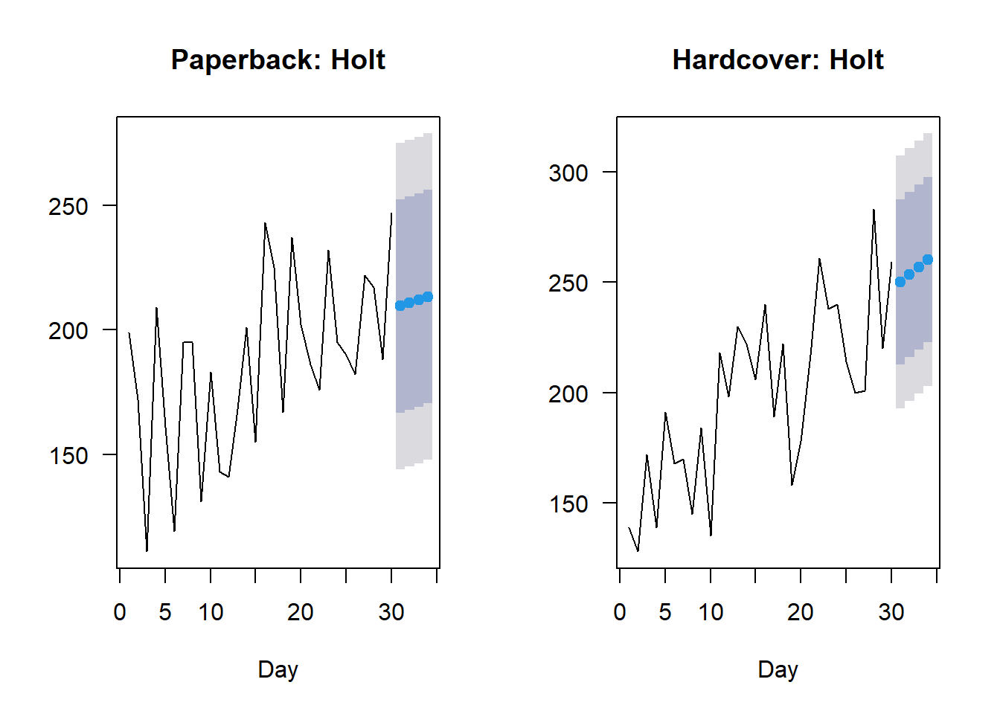
Training RMSE and AICc for both methods. AICc penalises Holt’s two extra parameters (\(\beta\) and \(b_0\)), RMSE does not.
fits_b <- list(ses_pb = ses_pb, holt_pb = holt_pb, ses_hc = ses_hc, holt_hc = holt_hc)
t(sapply(fits_b, function(f) c(RMSE = accuracy(f)[, "RMSE"], AICc = f$model$aicc))) RMSE AICc
ses_pb 33.63769 319.8978
holt_pb 31.13692 320.8396
ses_hc 31.93101 316.7737
holt_hc 27.19358 312.7148holt_pb$model$par alpha beta l b
1.000143e-04 1.000009e-04 1.706990e+02 1.262126e+00 holt_hc$model$par alpha beta l b
1.000163e-04 1.000004e-04 1.477935e+02 3.303008e+00 Comparison of SES and Holt by RMSE and AICc
sapply(fits_b, function(f) f$mean) ses_pb holt_pb ses_hc holt_hc
[1,] 207.1097 209.4668 239.5601 250.1739
[2,] 207.1097 210.7177 239.5601 253.4765
[3,] 207.1097 211.9687 239.5601 256.7791
[4,] 207.1097 213.2197 239.5601 260.0817Comment on the forecasts
95% interval for the first forecast as \(\hat{y} \pm 1.96 \times \text{RMSE}\), next to the intervals from ses() and holt().
t(sapply(fits_b, function(f) {
rmse <- accuracy(f)[, "RMSE"]
c(fc = f$mean[1],
rmse_lo = f$mean[1] - 1.96 * rmse, rmse_hi = f$mean[1] + 1.96 * rmse,
r_lo = unname(f$lower[1, "95%"]), r_hi = unname(f$upper[1, "95%"]))
})) fc rmse_lo rmse_hi r_lo r_hi
ses_pb 207.1097 141.1798 273.0395 138.8670 275.3523
holt_pb 209.4668 148.4384 270.4951 143.9130 275.0205
ses_hc 239.5601 176.9753 302.1449 174.7799 304.3403
holt_hc 250.1739 196.8745 303.4733 192.9222 307.4256Comparison of the RMSE-based and model-based intervals
Simulate from the innovations state-space form of SES: \(y_t = \ell_{t-1} + \varepsilon_t\), \(\ell_t = \ell_{t-1} + \alpha \varepsilon_t\), \(\varepsilon_t \sim N(0, \sigma^2)\), with \(\alpha = 0.3\), \(\ell_0 = 50\), \(\sigma = 2\).
sim_ses <- function(n, alpha, l0, sigma) {
y <- numeric(n)
level <- l0
for (t in 1:n) {
e <- rnorm(1, 0, sigma)
y[t] <- level + e
level <- level + alpha * e
}
ts(y)
}
set.seed(2026)
y_ses <- sim_ses(n = 200, alpha = 0.3, l0 = 50, sigma = 2)
plot(y_ses, las = 1, ylab = "y")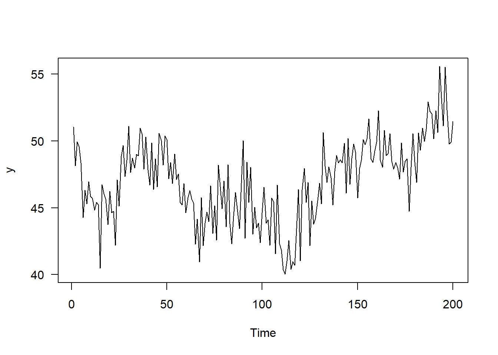
est_s <- optim(c(0.5, y_ses[1]), ses_sse, y = y_ses)
fit_s <- ses(y_ses)
rbind(true = c(alpha = 0.3, l = 50, sigma = 2),
optim = c(est_s$par, sqrt(est_s$value / (length(y_ses) - 2))),
ses = c(fit_s$model$par[c("alpha", "l")], sqrt(fit_s$model$sigma2))) alpha l sigma
true 0.3000000 50.00000 2.000000
optim 0.3190421 49.08860 1.970499
ses 0.3189861 49.08758 1.970499Comment on how well the true SES parameters are recovered
Holt’s method in the same form: \(y_t = \ell_{t-1} + b_{t-1} + \varepsilon_t\), \(\ell_t = \ell_{t-1} + b_{t-1} + \alpha \varepsilon_t\), \(b_t = b_{t-1} + \beta \varepsilon_t\), with \(\alpha = 0.3\), \(\beta = 0.05\), \(\ell_0 = 50\), \(b_0 = 0.5\), \(\sigma = 2\). holt() reports \(\beta\) in this parametrisation.
sim_holt <- function(n, alpha, beta, l0, b0, sigma) {
y <- numeric(n)
level <- l0
trend <- b0
for (t in 1:n) {
e <- rnorm(1, 0, sigma)
y[t] <- level + trend + e
level <- level + trend + alpha * e
trend <- trend + beta * e
}
ts(y)
}
set.seed(2026)
y_holt <- sim_holt(n = 200, alpha = 0.3, beta = 0.05, l0 = 50, b0 = 0.5, sigma = 2)
plot(y_holt, las = 1, ylab = "y")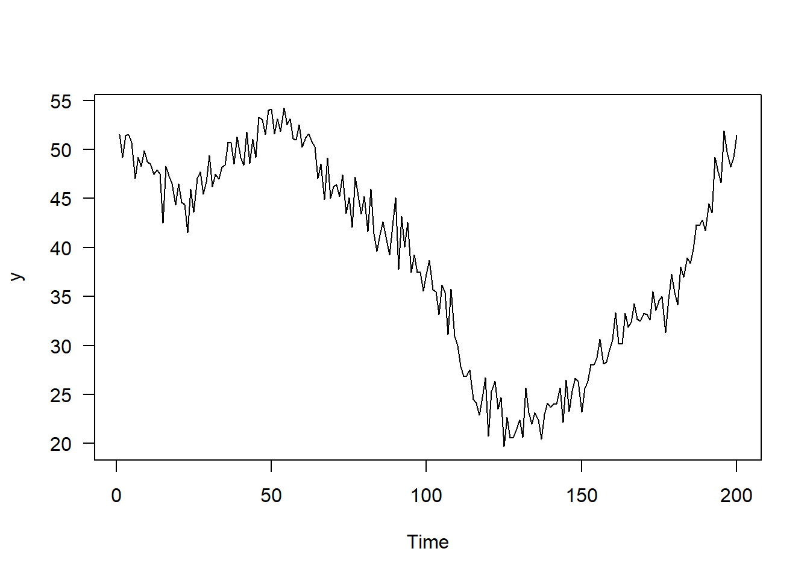
holt_sse <- function(par, y) {
alpha <- par[1]
beta <- par[2]
level <- par[3]
trend <- par[4]
sse <- 0
for (t in seq_along(y)) {
e <- y[t] - (level + trend)
sse <- sse + e^2
level <- level + trend + alpha * e
trend <- trend + beta * e
}
sse
}est_h <- optim(c(0.5, 0.1, y_holt[1], 0), holt_sse, y = y_holt)
fit_h <- holt(y_holt)
rbind(true = c(alpha = 0.3, beta = 0.05, l = 50, b = 0.5, sigma = 2),
optim = c(est_h$par, sqrt(est_h$value / (length(y_holt) - 4))),
holt = c(fit_h$model$par[c("alpha", "beta", "l", "b")], sqrt(fit_h$model$sigma2))) alpha beta l b sigma
true 0.3000000 0.05000000 50.00000 0.5000000 2.000000
optim 0.2710447 0.05921154 51.57247 -0.3250925 1.948066
holt 0.2710659 0.05919266 51.57141 -0.3254630 1.948066Comment on how well the true Holt parameters are recovered
Reflection: what you learned, what was difficult, and how it fed into the projects
Brief statement of each question
library(dlm)Same build function as in the prac, with \(V\) and \(W\) estimated on the log scale.
build_rwpn <- function(p) {
dlmModPoly(order = 1, dV = exp(p[1]), dW = exp(p[2]))
}
mle_nile <- dlmMLE(Nile, parm = c(log(var(Nile)), log(var(Nile))), build = build_rwpn)
mle_nile$convergence[1] 0exp(mle_nile$par)[1] 15099.797 1468.428Interpretation of the estimated V and W, and their ratio
Filtered and smoothed level.
mod_nile <- build_rwpn(mle_nile$par)
filt_nile <- dlmFilter(Nile, mod_nile)
smooth_nile <- dlmSmooth(filt_nile)
plot(Nile, las = 1, ylab = "Annual flow")
lines(dropFirst(filt_nile$m), col = "blue", lwd = 2)
lines(dropFirst(smooth_nile$s), col = "orange", lwd = 2)
legend("topright", legend = c("filtered", "smoothed"), col = c("blue", "orange"), lwd = 2, bty = "n")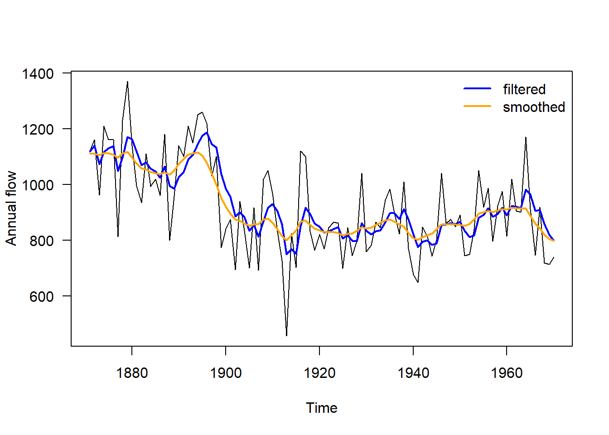
Comment on the filtered against the smoothed level
Ten-year forecast. The interval uses \(Q_t\), the forecast variance of \(y_{T+h}\), rather than \(R_t\), the forecast variance of the state.
fc_nile <- dlmForecast(filt_nile, nAhead = 10)
yrs_fc <- 1971:1980
se_y <- sqrt(unlist(fc_nile$Q))
se_state <- sqrt(unlist(fc_nile$R))
plot(Nile, xlim = c(1871, 1980), las = 1, ylab = "Annual flow")
lines(dropFirst(filt_nile$m), col = "blue", lwd = 2)
lines(yrs_fc, fc_nile$f, col = "purple", lwd = 2)
lines(yrs_fc, fc_nile$f - 1.96 * se_y, col = "purple", lty = 2)
lines(yrs_fc, fc_nile$f + 1.96 * se_y, col = "purple", lty = 2)
lines(yrs_fc, fc_nile$a - 1.96 * se_state, col = "grey40", lty = 3)
lines(yrs_fc, fc_nile$a + 1.96 * se_state, col = "grey40", lty = 3)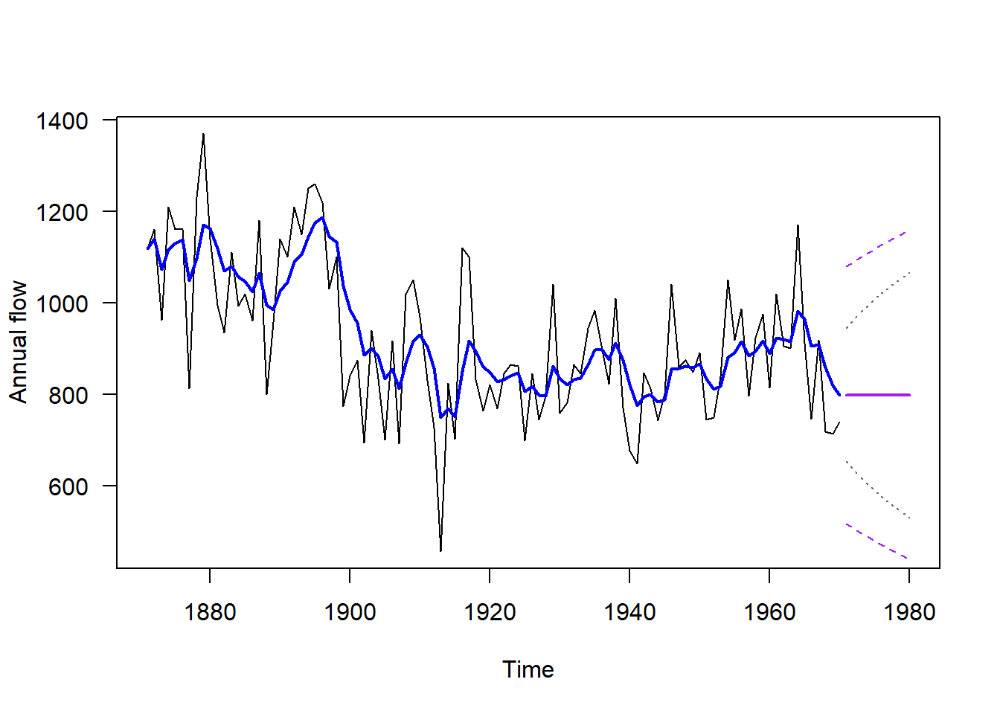
Comment on the forecast and the two intervals
Set 1921 to 1940 to NA and run the filter and smoother with the same parameters.
nile_na <- Nile
window(nile_na, start = 1921, end = 1940) <- NA
filt_na <- dlmFilter(nile_na, mod_nile)
smooth_na <- dlmSmooth(filt_na)
se_filt <- sqrt(unlist(dlmSvd2var(filt_na$U.C, filt_na$D.C)))[-1]
se_smooth <- sqrt(unlist(dlmSvd2var(smooth_na$U.S, smooth_na$D.S)))[-1]m_filt <- dropFirst(filt_na$m)
m_smooth <- dropFirst(smooth_na$s)
plot(nile_na, las = 1, ylab = "Annual flow", ylim = c(400, 1400))
lines(m_filt, col = "blue", lwd = 2)
lines(m_filt - 1.96 * se_filt, col = "blue", lty = 2)
lines(m_filt + 1.96 * se_filt, col = "blue", lty = 2)
lines(m_smooth, col = "orange", lwd = 2)
lines(m_smooth - 1.96 * se_smooth, col = "orange", lty = 2)
lines(m_smooth + 1.96 * se_smooth, col = "orange", lty = 2)
abline(v = c(1920.5, 1940.5), col = "grey")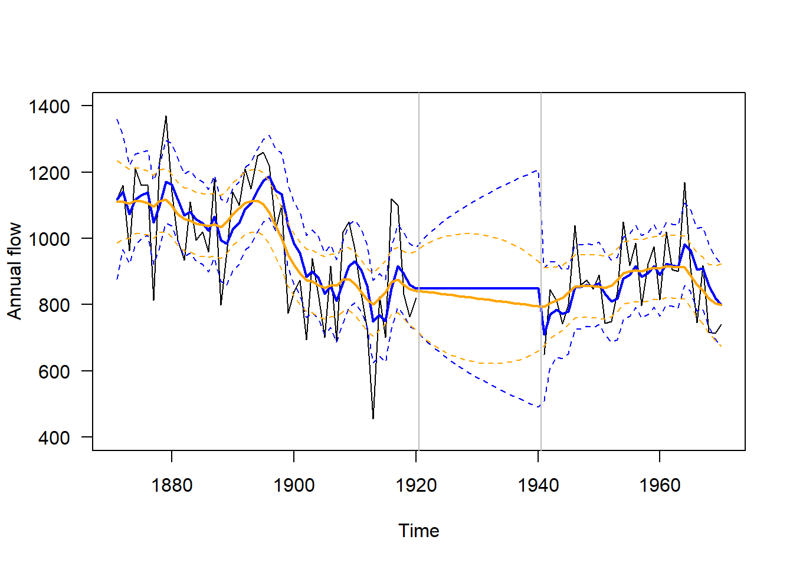
gap <- time(Nile) >= 1919 & time(Nile) <= 1942
cbind(year = time(Nile)[gap], y = nile_na[gap],
filtered = m_filt[gap], se_filt = se_filt[gap],
smoothed = m_smooth[gap], se_smooth = se_smooth[gap]) year y filtered se_filt smoothed se_smooth
[1,] 1919 764 859.2978 63.49410 847.0887 54.93648
[2,] 1920 821 849.0726 63.49410 842.6417 60.11394
[3,] 1921 NA 849.0726 74.16150 840.2993 68.71909
[4,] 1922 NA 849.0726 83.47668 837.9569 75.63120
[5,] 1923 NA 849.0726 91.85197 835.6144 81.28334
[6,] 1924 NA 849.0726 99.52493 833.2720 85.92451
[7,] 1925 NA 849.0726 106.64727 830.9296 89.71175
[8,] 1926 NA 849.0726 113.32285 828.5872 92.74972
[9,] 1927 NA 849.0726 119.62649 826.2448 95.11027
[10,] 1928 NA 849.0726 125.61419 823.9024 96.84292
[11,] 1929 NA 849.0726 131.32918 821.5600 97.98100
[12,] 1930 NA 849.0726 136.80563 819.2176 98.54511
[13,] 1931 NA 849.0726 142.07114 816.8752 98.54511
[14,] 1932 NA 849.0726 147.14835 814.5328 97.98100
[15,] 1933 NA 849.0726 152.05612 812.1904 96.84292
[16,] 1934 NA 849.0726 156.81037 809.8480 95.11027
[17,] 1935 NA 849.0726 161.42466 807.5056 92.74973
[18,] 1936 NA 849.0726 165.91066 805.1632 89.71175
[19,] 1937 NA 849.0726 170.27853 802.8208 85.92451
[20,] 1938 NA 849.0726 174.53712 800.4784 81.28334
[21,] 1939 NA 849.0726 178.69424 798.1360 75.63120
[22,] 1940 NA 849.0726 182.75683 795.7936 68.71909
[23,] 1941 649 709.4595 102.64904 793.4512 60.11394
[24,] 1942 846 769.9354 81.77981 805.1564 54.93648Interpretation: how the filtered and smoothed standard errors behave across the missing years
The model from the prac is refitted here so that this section runs on its own.
build_bsm <- function(p) {
mod <- dlmModPoly() + dlmModSeas(12)
W(mod)[1, 1] <- exp(p[1])
W(mod)[2, 2] <- exp(p[2])
W(mod)[3, 3] <- exp(p[3])
V(mod) <- exp(p[4])
mod
}
mle_bsm <- dlmMLE(co2, parm = c(0, 0, 0, 0), build = build_bsm)
mod_bsm <- build_bsm(mle_bsm$par)
filt_bsm <- dlmFilter(co2, mod_bsm)
exp(mle_bsm$par)[1] 4.683313e-02 3.937575e-06 2.246651e-05 2.065222e-02The filtered states are erratic at the start of the series because the prior is diffuse, with \(m_0 = 0\) and \(C_0 = 10^7 I_{13}\). The table shows the filtered level, slope and first seasonal state, with the standard error of the level, for the first two years. Comment on how quickly the filter settles
se_bsm <- t(sapply(dlmSvd2var(filt_bsm$U.C, filt_bsm$D.C), function(C) sqrt(diag(C)[1:3])))
round(cbind(y = c(NA, co2[1:24]),
level = filt_bsm$m[1:25, 1], se_level = se_bsm[1:25, 1],
slope = filt_bsm$m[1:25, 2], season = filt_bsm$m[1:25, 3]), 2) y level se_level slope season
[1,] NA 0.00 3162.28 0.00 0.00
[2,] 315.42 48.53 4113.77 24.26 266.89
[3,] 316.31 286.29 2625.24 111.11 30.02
[4,] 316.50 357.60 2284.16 96.30 -41.10
[5,] 317.56 389.35 2119.32 75.29 -71.79
[6,] 318.13 402.25 1996.85 57.76 -84.12
[7,] 318.00 405.92 1888.53 44.60 -87.92
[8,] 316.39 404.73 1788.78 34.84 -88.34
[9,] 314.65 401.30 1696.52 27.62 -86.65
[10,] 313.68 397.18 1611.29 22.26 -83.50
[11,] 313.18 393.07 1532.61 18.23 -79.89
[12,] 314.66 389.75 1459.89 15.23 -75.09
[13,] 315.43 386.90 1392.52 12.92 -71.47
[14,] 316.27 316.29 0.24 0.07 -0.02
[15,] 316.81 316.16 0.24 0.06 0.69
[16,] 317.42 316.42 0.24 0.07 0.96
[17,] 318.87 316.76 0.23 0.08 2.05
[18,] 319.87 317.17 0.23 0.10 2.63
[19,] 319.43 317.16 0.23 0.09 2.29
[20,] 318.01 317.35 0.23 0.10 0.65
[21,] 315.74 317.15 0.23 0.08 -1.35
[22,] 314.00 316.71 0.23 0.06 -2.60
[23,] 313.68 316.74 0.23 0.05 -3.06
[24,] 314.84 316.60 0.22 0.04 -1.72
[25,] 316.03 316.85 0.22 0.05 -0.86Fitted values are the one-step-ahead predictions \(f_t = F a_t\), added in red.
level_bsm <- dropFirst(filt_bsm$m[, 1])
season_bsm <- dropFirst(filt_bsm$m[, 3])
plot(co2, ylim = c(300, 380), las = 1, lwd = 2)
lines(level_bsm, col = "blue", lwd = 2)
lines(level_bsm + season_bsm, col = "orange", lwd = 2)
lines(ts(filt_bsm$f, start = start(co2), frequency = 12), col = "red")
legend("topleft", legend = c("observed", "filtered level", "filtered level + season", "fitted (one step ahead)"),
col = c("black", "blue", "orange", "red"), lwd = 2, bty = "n")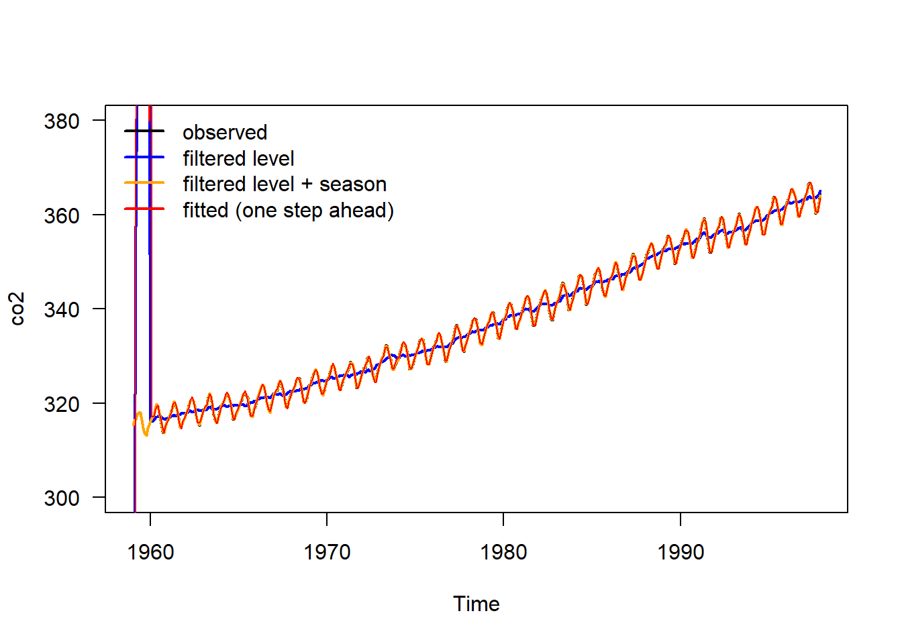
plot(window(co2, start = 1990), las = 1, lwd = 2, ylab = "co2")
lines(window(ts(filt_bsm$f, start = start(co2), frequency = 12), start = 1990), col = "red", lwd = 2)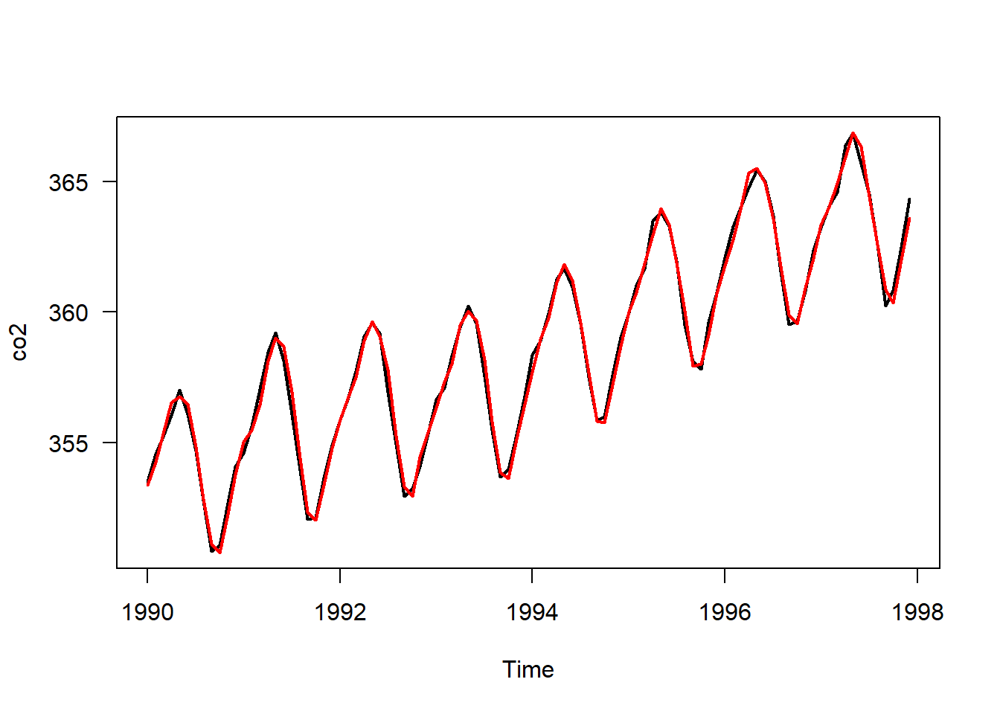
Predictions for the next five years (60 months) with 95% prediction intervals from \(Q_t\).
fc_bsm <- dlmForecast(filt_bsm, nAhead = 60)
se_fc_bsm <- sqrt(unlist(fc_bsm$Q))
f_bsm <- ts(fc_bsm$f[, 1], start = c(1998, 1), frequency = 12)
plot(window(co2, start = 1985), xlim = c(1985, 2003), ylim = c(340, 385), las = 1, ylab = "co2")
lines(f_bsm, col = "purple", lwd = 2)
lines(f_bsm - 1.96 * se_fc_bsm, col = "purple", lty = 2)
lines(f_bsm + 1.96 * se_fc_bsm, col = "purple", lty = 2)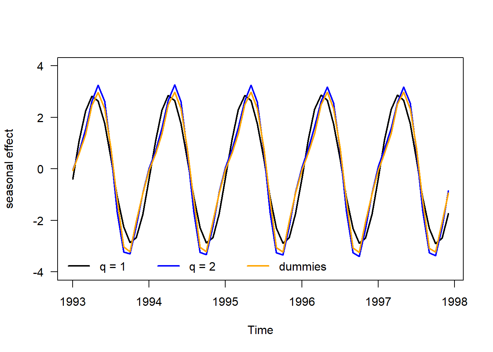
Comment on the five-year forecast
Local linear trend plus \(q\) harmonics. All trigonometric states share one variance.
build_trig <- function(p, q) {
mod <- dlmModPoly() + dlmModTrig(s = 12, q = q)
k <- nrow(W(mod))
W(mod)[1, 1] <- exp(p[1])
W(mod)[2, 2] <- exp(p[2])
diag(W(mod))[3:k] <- exp(p[3])
V(mod) <- exp(p[4])
mod
}Fit \(q = 1, \dots, 6\). \(q = 6\) spans the same seasonal space as the 12 seasonal dummies. Log-likelihood, AIC and the RMSE of one-step-ahead prediction errors after the first two years.
rmse_after <- function(filt, burn = 24) {
e <- filt$y - filt$f
sqrt(mean(e[-(1:burn)]^2))
}
fits_trig <- lapply(1:6, function(q) {
mle <- dlmMLE(co2, parm = c(0, 0, 0, 0), build = build_trig, q = q)
mod <- build_trig(mle$par, q)
list(mle = mle, mod = mod, filt = dlmFilter(co2, mod))
})
compare <- rbind(
t(sapply(fits_trig, function(f) c(conv = f$mle$convergence, logLik = -f$mle$value,
AIC = 2 * f$mle$value + 2 * 4, RMSE = rmse_after(f$filt)))),
c(mle_bsm$convergence, -mle_bsm$value, 2 * mle_bsm$value + 2 * 4, rmse_after(filt_bsm)))
rownames(compare) <- c(paste0("trig q=", 1:6), "BSM dummies")
compare conv logLik AIC RMSE
trig q=1 52 -64.46629 136.9326 0.6430767
trig q=2 0 253.06831 -498.1366 0.3110558
trig q=3 0 252.05488 -496.1098 0.2971012
trig q=4 0 246.76576 -485.5315 0.2870638
trig q=5 0 220.42704 -432.8541 0.2917416
trig q=6 0 205.41974 -402.8395 0.2941461
BSM dummies 0 204.27407 -400.5481 0.3012234t(sapply(fits_trig, function(f) exp(f$mle$par))) [,1] [,2] [,3] [,4]
[1,] 0.40677515 4.461908e-07 1.327535e-04 3.635262e-08
[2,] 0.02272335 4.680934e-06 8.349798e-05 4.274288e-02
[3,] 0.02369801 4.610570e-06 5.355852e-05 3.464347e-02
[4,] 0.02677792 4.544845e-06 4.033329e-05 2.660635e-02
[5,] 0.02786782 4.499283e-06 3.131965e-05 2.554041e-02
[6,] 0.02856235 4.441817e-06 2.483867e-05 2.543132e-02Interpretation: which q is preferred, and how it compares with the dummy-variable model
Filtered seasonal component (\(F\) applied to the trigonometric states) for \(q = 1\), \(q = 2\) and the dummy model over the last five years.
season_trig <- function(f) {
m <- dropFirst(f$filt$m)
ts(m[, -(1:2)] %*% FF(f$mod)[-(1:2)], start = start(co2), frequency = 12)
}
plot(window(season_trig(fits_trig[[1]]), start = 1993), las = 1, lwd = 2, ylim = c(-4, 4), ylab = "seasonal effect")
lines(window(season_trig(fits_trig[[2]]), start = 1993), col = "blue", lwd = 2)
lines(window(ts(season_bsm, start = start(co2), frequency = 12), start = 1993), col = "orange", lwd = 2)
legend("bottomleft", legend = c("q = 1", "q = 2", "dummies"), col = c("black", "blue", "orange"), lwd = 2, bty = "n", horiz = TRUE)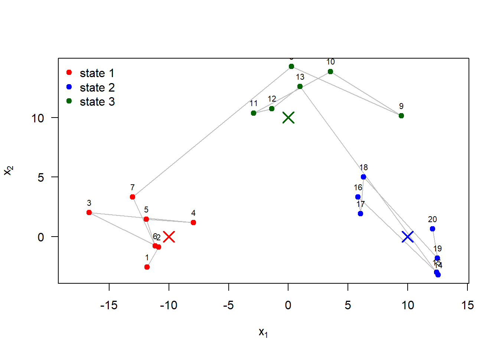
Comment on the seasonal shapes
Reflection: what you learned, what was difficult, and how it fed into the projects
Brief statement of each question
library(SimDesign)
library(depmixS4)Simulate the state sequence from \(\Gamma\), then each observation from the bivariate normal of its state. The initial state is drawn from the stationary distribution, which is uniform for this \(\Gamma\).
Gamma1 <- matrix(c(0.8, 0.1, 0.1,
0.1, 0.8, 0.1,
0.1, 0.1, 0.8), nrow = 3, byrow = TRUE)
mu <- 10 * matrix(c(-1, 0, 1, 0, 0, 1), ncol = 2, byrow = TRUE)
sf <- 10
sigma <- array(0, dim = c(2, 2, 3))
sigma[, , 1] <- sf * matrix(c(1, 1/2, 1/2, 1), nrow = 2)
sigma[, , 2] <- sf * matrix(c(1, -1/2, -1/2, 1), nrow = 2)
sigma[, , 3] <- sf * matrix(c(3, 0, 0, 1/2), nrow = 2)sim_hmm_mvn <- function(n, Gamma, delta, mu, sigma) {
m <- nrow(Gamma)
z <- numeric(n)
z[1] <- sample(1:m, 1, prob = delta)
for (t in 2:n) z[t] <- sample(1:m, 1, prob = Gamma[z[t - 1], ])
x <- t(sapply(z, function(k) rmvnorm(1, mean = mu[k, ], sigma = sigma[, , k])))
list(z = z, x = x)
}
set.seed(2026)
sim1 <- sim_hmm_mvn(n = 20, Gamma = Gamma1, delta = rep(1/3, 3), mu = mu, sigma = sigma)
sim1$z [1] 1 1 1 1 1 1 1 3 3 3 3 3 3 2 2 2 2 2 2 2cols <- c("red", "blue", "darkgreen")
plot(sim1$x, type = "n", las = 1, asp = 1, xlab = expression(x[1]), ylab = expression(x[2]))
lines(sim1$x, col = "grey")
points(sim1$x, pch = 19, col = cols[sim1$z])
text(sim1$x, labels = 1:20, pos = 3, cex = 0.7)
points(mu, pch = 4, cex = 2, lwd = 2, col = cols)
legend("topleft", legend = paste("state", 1:3), col = cols, pch = 19, bty = "n")
Comment on the simulated path
Viterbi algorithm on the log scale. log_emis is a \(T \times m\) matrix of \(\log p_i(x_t)\), so the same function can be reused for any state-dependent distribution.
viterbi <- function(log_init, log_Gamma, log_emis) {
n <- nrow(log_emis)
m <- ncol(log_emis)
xi <- matrix(NA, nrow = n, ncol = m)
xi[1, ] <- log_init + log_emis[1, ]
for (t in 2:n) {
for (j in 1:m) xi[t, j] <- max(xi[t - 1, ] + log_Gamma[, j]) + log_emis[t, j]
}
path <- numeric(n)
path[n] <- which.max(xi[n, ])
for (t in (n - 1):1) path[t] <- which.max(xi[t, ] + log_Gamma[, path[t + 1]])
list(xi = xi, path = path)
}init_prob <- c(0.4, 0.3, 0.3)
tpm <- matrix(c(0.5, 0.3, 0.2, 0.1, 0.6, 0.3, 0.2, 0.2, 0.6), byrow = TRUE, ncol = 3)
emmprob <- matrix(c(0.6, 0.2, 0.2, 0.1, 0.5, 0.4, 0.3, 0.3, 0.4), byrow = TRUE, ncol = 3)
states <- c("A", "B", "C")
obs <- c("x", "x", "x", "x", "x", "x", "x", "z", "z", "y")
obs_idx <- match(obs, c("x", "y", "z"))
true_path <- c("A", "C", "A", "A", "A", "A", "A", "B", "B", "B")
vit2 <- viterbi(log(init_prob), log(tpm), log(t(emmprob[, obs_idx])))
rbind(obs = obs, viterbi = states[vit2$path], true = true_path) [,1] [,2] [,3] [,4] [,5] [,6] [,7] [,8] [,9] [,10]
obs "x" "x" "x" "x" "x" "x" "x" "z" "z" "y"
viterbi "A" "A" "A" "A" "A" "A" "A" "B" "B" "B"
true "A" "C" "A" "A" "A" "A" "A" "B" "B" "B" \(\xi_{ti}\) on the log scale, with the decoded path circled and the true path marked with crosses.
matplot(vit2$xi, type = "b", pch = states, col = cols, lty = 1, las = 1,
xlab = "t", ylab = expression(log ~ xi[ti]), xaxt = "n")
axis(1, at = 1:10, labels = paste0(1:10, "\n", obs), padj = 0.5)
points(1:10, vit2$xi[cbind(1:10, vit2$path)], cex = 2.5)
points(1:10, vit2$xi[cbind(1:10, match(true_path, states))], pch = 4, cex = 2)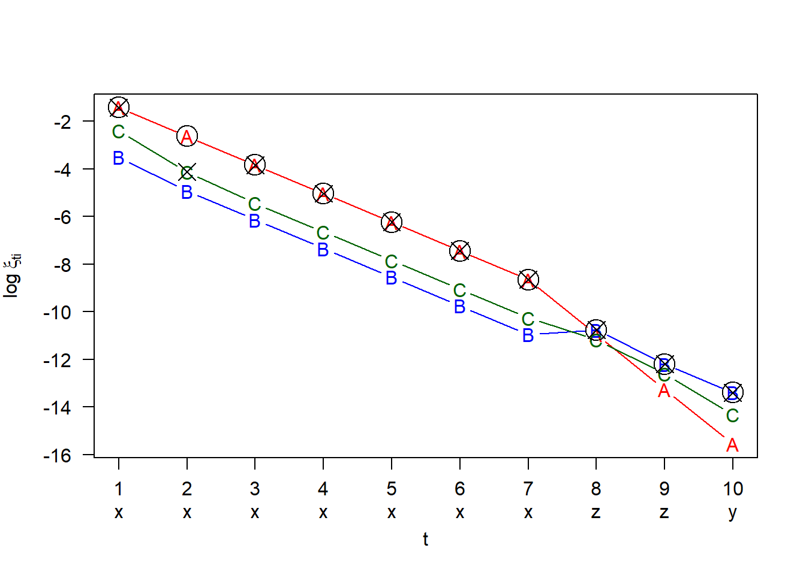
signif(exp(vit2$xi), 3) [,1] [,2] [,3]
[1,] 2.40e-01 3.00e-02 9.00e-02
[2,] 7.20e-02 7.20e-03 1.62e-02
[3,] 2.16e-02 2.16e-03 4.32e-03
[4,] 6.48e-03 6.48e-04 1.30e-03
[5,] 1.94e-03 1.94e-04 3.89e-04
[6,] 5.83e-04 5.83e-05 1.17e-04
[7,] 1.75e-04 1.75e-05 3.50e-05
[8,] 1.75e-05 2.10e-05 1.40e-05
[9,] 1.75e-06 5.04e-06 3.36e-06
[10,] 1.75e-07 1.51e-06 6.05e-07Interpretation: where the Viterbi path differs from the true path, and why
Stationary distribution: solve \(\delta(I - \Gamma + U) = \mathbf{1}\), with \(U\) a matrix of ones.
Gamma3 <- matrix(c(0.1, 0.9, 0.4, 0.6), nrow = 2, byrow = TRUE)
lambda3 <- c(1, 3)
x3 <- c(0, 2, 1)
delta3 <- solve(t(diag(2) - Gamma3 + 1), rep(1, 2))
delta3[1] 0.3076923 0.6923077seqs <- expand.grid(c1 = 1:2, c2 = 1:2, c3 = 1:2)
p_seq <- apply(seqs, 1, function(s) delta3[s[1]] * Gamma3[s[1], s[2]] * Gamma3[s[2], s[3]])
p_obs <- apply(seqs, 1, function(s) prod(dpois(x3, lambda3[s])))
tab3 <- cbind(seqs, p_seq = p_seq, p_obs_given_seq = p_obs, joint = p_seq * p_obs)
tab3 c1 c2 c3 p_seq p_obs_given_seq joint
1 1 1 1 0.003076923 0.024893534 7.659549e-05
2 2 1 1 0.027692308 0.003368973 9.329465e-05
3 1 2 1 0.110769231 0.030320761 3.358607e-03
4 2 2 1 0.166153846 0.004103469 6.818071e-04
5 1 1 2 0.027692308 0.010106920 2.798840e-04
6 2 1 2 0.249230769 0.001367823 3.409036e-04
7 1 2 2 0.166153846 0.012310407 2.045421e-03
8 2 2 2 0.249230769 0.001666032 4.152265e-04sum(tab3$joint)[1] 0.00729174P <- function(x) diag(dpois(x, lambda3))
delta3 %*% P(0) %*% Gamma3 %*% P(2) %*% Gamma3 %*% P(1) %*% rep(1, 2) [,1]
[1,] 0.00729174Comment on the agreement between a) and b)
\(P(x) = \text{diag}(p_1(x), p_2(x))\) with \(P(X_t = 1 | C_t = i) = (0.5, 1)\), so \(P(0) = \text{diag}(0.5, 0)\) and \(P(1) = \text{diag}(0.5, 1)\).
Gamma7 <- matrix(c(0.5, 0.5, 0.25, 0.75), nrow = 2, byrow = TRUE)
delta7 <- c(1, 2) / 3
p1 <- c(0.5, 1)
P_bern <- function(x, p1) diag(dbinom(x, size = 1, prob = p1))
P_bern(0, p1) [,1] [,2]
[1,] 0.5 0
[2,] 0.0 0P_bern(1, p1) [,1] [,2]
[1,] 0.5 0
[2,] 0.0 1bern_hmm_lik <- function(x, Gamma, delta, p1) {
v <- delta %*% P_bern(x[1], p1)
if (length(x) > 1) {
for (t in 2:length(x)) v <- v %*% Gamma %*% P_bern(x[t], p1)
}
sum(v)
}
c(L = bern_hmm_lik(c(1, 1, 1), Gamma7, delta7, p1), check = 29/48) L check
0.6041667 0.6041667 Marginal probabilities \(P(X_t = 0)\) and \(P(X_t = 1)\) under the stationary distribution.
c(P0 = bern_hmm_lik(0, Gamma7, delta7, p1), P1 = bern_hmm_lik(1, Gamma7, delta7, p1)) P0 P1
0.1666667 0.8333333 Interpretation of the marginal probabilities
Annual counts of major earthquakes, 1900 to 2006. Source citation for the earthquake counts
eq <- data.frame(
year = 1900:2006,
quakes = c(13, 14, 8, 10, 16, 26, 32, 27, 18, 32, 36, 24, 22, 23, 22, 18, 25, 21, 21, 14, 8, 11, 14, 23, 18, 17, 19, 20, 22, 19, 13, 26, 13, 14, 22, 24, 21, 22, 26, 21, 23, 24, 27, 41, 31, 27, 35, 26, 28, 36, 39, 21, 17, 22, 17, 19, 15, 34, 10, 15, 22, 18, 15, 20, 15, 22, 19, 16, 30, 27, 29, 23, 20, 16, 21, 21, 25, 16, 18, 15, 18, 14, 10, 15, 8, 15, 6, 11, 8, 7, 18, 16, 13, 12, 13, 20, 15, 16, 12, 18, 15, 16, 13, 15, 16, 11, 11))
plot(eq$year, eq$quakes, type = "b", pch = 19, cex = 0.5, las = 1, xlab = "Year", ylab = "Number of earthquakes")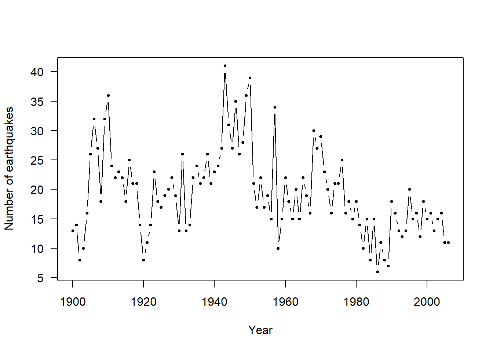
Negative log-likelihood of a two-state Poisson HMM using the scaling algorithm from the notes. The working parameters are \(\log \lambda_i\) and the logits of the off-diagonal transition probabilities, so nlm can search over \(\mathbb{R}^4\). \(\delta\) is the stationary distribution of \(\Gamma\).
pois_w2n <- function(par) {
lambda <- exp(par[1:2])
g12 <- plogis(par[3])
g21 <- plogis(par[4])
Gamma <- matrix(c(1 - g12, g12, g21, 1 - g21), nrow = 2, byrow = TRUE)
delta <- c(g21, g12) / (g12 + g21)
list(lambda = lambda, Gamma = Gamma, delta = delta)
}
pois2_nll <- function(par, x) {
pn <- pois_w2n(par)
phi <- pn$delta
ll <- 0
for (t in seq_along(x)) {
Px <- diag(dpois(x[t], pn$lambda))
v <- if (t == 1) phi %*% Px else phi %*% pn$Gamma %*% Px
u <- sum(v)
ll <- ll + log(u)
phi <- v / u
}
-ll
}out_eq <- nlm(pois2_nll, p = c(log(15), log(25), qlogis(0.1), qlogis(0.1)), x = eq$quakes)
out_eq$code[1] 1pn_eq <- pois_w2n(out_eq$estimate)
pn_eq$lambda
[1] 15.47223 26.12535
$Gamma
[,1] [,2]
[1,] 0.9340391 0.06596092
[2,] 0.1285104 0.87148955
$delta
[1] 0.6608194 0.3391806-out_eq$minimum[1] -342.3183Same model with depmixS4. Note that depmix estimates the initial state probabilities freely rather than fixing them at the stationary distribution.
set.seed(1)
mod_eq <- depmix(quakes ~ 1, data = eq, nstates = 2, family = poisson())
fm_eq <- fit(mod_eq)converged at iteration 26 with logLik: -341.8787 summary(fm_eq)Initial state probabilities model
pr1 pr2
0 1
Transition matrix
toS1 toS2
fromS1 0.881 0.119
fromS2 0.072 0.928
Response parameters
Resp 1 : poisson
Re1.(Intercept)
St1 3.259
St2 2.736lambda_dm <- exp(sapply(1:2, function(i) getpars(fm_eq@response[[i]][[1]])))
ord <- order(lambda_dm)
comp_eq <- rbind(own = c(pn_eq$lambda, diag(pn_eq$Gamma), -out_eq$minimum),
depmix = c(lambda_dm[ord], diag(matrix(getpars(fm_eq)[3:6], 2, byrow = TRUE))[ord],
as.numeric(logLik(fm_eq))))
colnames(comp_eq) <- c("lambda1", "lambda2", "gamma11", "gamma22", "logLik")
comp_eq lambda1 lambda2 gamma11 gamma22 logLik
own 15.47223 26.12535 0.9340391 0.8714896 -342.3183
depmix 15.41912 26.01470 0.9283505 0.8810400 -341.8787Most likely state sequence from the own fit (Viterbi function from Question 2) and from depmixS4, with states ordered by \(\lambda\). The last line counts the years where the two decodings differ.
log_emis_eq <- sapply(pn_eq$lambda, function(l) dpois(eq$quakes, l, log = TRUE))
vit_eq <- viterbi(log(pn_eq$delta), log(pn_eq$Gamma), log_emis_eq)
vit_dm <- rank(lambda_dm)[posterior(fm_eq, type = "viterbi")$state]
plot(eq$year, eq$quakes, type = "b", pch = 19, cex = 0.5, las = 1, xlab = "Year", ylab = "Number of earthquakes")
lines(eq$year, pn_eq$lambda[vit_eq$path], col = "red", lwd = 2, type = "s")
lines(eq$year, sort(lambda_dm)[vit_dm], col = "blue", lwd = 2, lty = 2, type = "s")
legend("topleft", legend = c("own fit", "depmixS4"), col = c("red", "blue"), lty = 1:2, lwd = 2, bty = "n")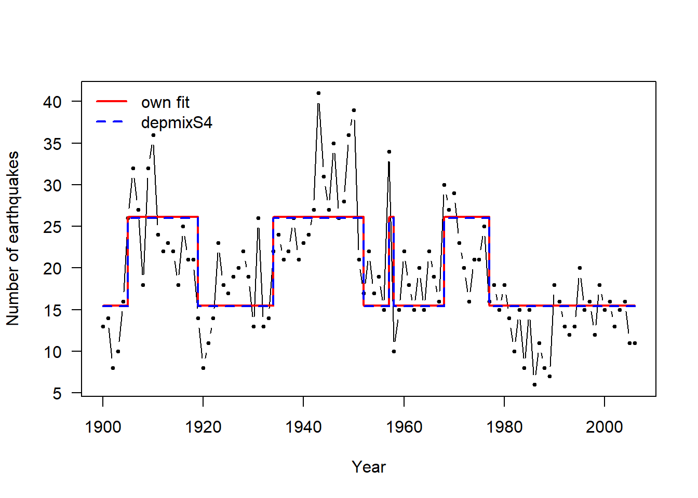
sum(vit_eq$path != vit_dm)[1] 0Interpretation of the two-state model: the two rates, the persistence of each state, and any differences between the decodings
Reflection: what you learned, what was difficult, and how it fed into the projects
Reflective commentary of 1000 to 2000 words covering learning achievements, methodological challenges, ethical and reproducibility considerations, and future areas for development
Placeholder: what you worked on, what you learned, and what you plan to do next.
Placeholder: what you worked on, what you learned, and what you plan to do next.
The bond yield data can be downloaded as a CSV from the FRED series page and saved as data/IRLTLT01ZAM156N.csv in the project folder. The Project 3 temperature series (nottem) and the tutorial datasets come from R packages (fpp2 and its dependencies, and the base datasets package) or are entered in the code. Date the data were downloaded
The source files are in the GitHub repository. Rendering index.qmd reproduces every table and figure.
# R version and package versions used to render this document
sessionInfo()R version 4.6.1 (2026-06-24 ucrt)
Platform: x86_64-w64-mingw32/x64
Running under: Windows 11 x64 (build 26300)
Matrix products: default
LAPACK version 3.12.1
locale:
[1] LC_COLLATE=English_South Africa.utf8 LC_CTYPE=English_South Africa.utf8
[3] LC_MONETARY=English_South Africa.utf8 LC_NUMERIC=C
[5] LC_TIME=English_South Africa.utf8
time zone: Africa/Johannesburg
tzcode source: internal
attached base packages:
[1] parallel stats graphics grDevices utils datasets methods
[8] base
other attached packages:
[1] SimDesign_2.28 dlm_1.1-6.1 expsmooth_2.3 fma_2.5
[5] fpp2_2.5.1 depmixS4_1.5-4 nlme_3.1-169 Rsolnp_2.0.1
[9] MASS_7.3-65 nnet_7.3-20 forecast_9.0.2 FinTS_0.4-9
[13] zoo_1.9-0 rugarch_1.5-6 fable_0.5.0 knitr_1.52
[17] tseries_0.10-63 tibbletime_0.1.9 feasts_0.5.0 fabletools_0.8.0
[21] tsibble_1.2.0 timetk_2.9.1 lubridate_1.9.5 forcats_1.0.1
[25] stringr_1.6.0 dplyr_1.2.1 purrr_1.2.2 readr_2.2.0
[29] tidyr_1.3.2 tibble_3.3.1 ggplot2_4.0.3 tidyverse_2.0.0
loaded via a namespace (and not attached):
[1] RColorBrewer_1.1-3 audio_0.1-12
[3] rstudioapi_0.19.0 jsonlite_2.0.0
[5] magrittr_2.0.5 farver_2.1.2
[7] nloptr_2.2.1 rmarkdown_2.31
[9] vctrs_0.7.3 htmltools_0.5.9
[11] distributional_0.8.1 curl_7.1.0
[13] truncnorm_1.0-9 TTR_0.24.4
[15] parallelly_1.48.0 pracma_2.4.6
[17] KernSmooth_2.23-26 htmlwidgets_1.6.4
[19] testthat_3.3.2 lifecycle_1.0.5
[21] pkgconfig_2.0.3 Matrix_1.7-5
[23] R6_2.6.1 fastmap_1.2.0
[25] future_1.75.0 digest_0.6.39
[27] numDeriv_2016.8-1.1 colorspace_2.1-3
[29] furrr_0.4.0 GeneralizedHyperbolic_0.8-7
[31] labeling_0.4.3 progressr_1.0.0
[33] timechange_0.4.0 mixtime_0.3.0
[35] mgcv_1.9-4 compiler_4.6.1
[37] proxy_0.4-29 bit64_4.8.2
[39] withr_3.0.3 S7_0.2.2
[41] R.utils_2.13.0 lava_1.9.3
[43] sessioninfo_1.2.4 tools_4.6.1
[45] otel_0.2.0 quantmod_0.4.29
[47] future.apply_1.20.2 clipr_0.8.1
[49] R.oo_1.27.1 glue_1.8.1
[51] quadprog_1.5-8 grid_4.6.1
[53] generics_0.1.4 recipes_1.4.0
[55] gtable_0.3.6 tzdb_0.5.0
[57] R.methodsS3_1.8.2 class_7.3-23
[59] data.table_1.18.4 hms_1.1.4
[61] rsample_1.3.2 stringfish_0.19.2
[63] pillar_1.11.1 ggdist_3.3.3
[65] vroom_1.7.1 splines_4.6.1
[67] lattice_0.22-9 survival_3.8-6
[69] bit_4.6.0 ks_1.15.3
[71] tidyselect_1.2.1 pbapply_1.7-5
[73] SkewHyperbolic_0.4-2 urca_1.3-4
[75] stats4_4.6.1 xfun_0.60
[77] hardhat_1.4.3 brio_1.1.5
[79] timeDate_4052.112 stringi_1.8.7
[81] yaml_2.3.12 evaluate_1.0.5
[83] codetools_0.2-20 DistributionUtils_0.6-2
[85] beepr_2.0 cli_3.6.6
[87] vecvec_1.3.0 RcppParallel_6.2.1
[89] rpart_4.1.27 spd_2.0-1
[91] ggtime_1.0.0 Rcpp_1.1.2
[93] globals_0.19.1 anytime_0.3.13
[95] fracdiff_1.5-4 gower_1.0.2
[97] assertthat_0.2.1 mclust_6.1.3
[99] listenv_1.0.0 mvtnorm_1.4-2
[101] ipred_0.9-16 e1071_1.7-17
[103] scales_1.4.0 xts_0.14.2
[105] prodlim_2026.03.11 crayon_1.5.3
[107] rlang_1.3.0 qs2_0.3.1 References in one consistent style: the FRED and OECD data, the textbooks and course notes, the R packages used (fable, forecast, rugarch, depmixS4, dlm and others), and any papers cited
OECD (n.d.). Long-term interest rates (indicator). Paris: OECD. Available at: https://www.oecd-ilibrary.org/en/data/indicators/long-term-interest-rates.html (accessed 29 October 2026).
South African Reserve Bank (1975). Statement regarding the abolition of the fixed pattern of interest rates on Government securities. Quarterly Bulletin, March 1975, p. 23. Pretoria: South African Reserve Bank. Available at: https://www.resbank.co.za/content/dam/sarb/publications/quarterly-bulletins/quarterly-bulletin-publications/1975/5431/03Statement-regarding-the-abolition-of-the-fixed-pattern-of-interest-rates-on-Government-securities.pdf
Working, H. (1960). Note on the correlation of first differences of averages in a random chain. Econometrica, 28(4), 916-918.